Every shipped design explained in full — the chips, the wiring, the memory map, the program, and the experiments worth running on it.
Twenty-one boards ship with the tool. They are not fixtures or screenshots: each one is built
by code that places real components and wires real pins, so you can open any of them, take it
apart, rewire it, and save your version. Nine carry a guided lab — a numbered
exercise with steps you tick off as you work.
Each board below gets the full treatment: what it is and why it is built that way, what every
significant chip does on this particular board, the address and IO map, what the default
program actually does, and a set of things worth trying — including several that involve
deliberately breaking something to watch how it fails.
The experiments are the point. Reading that a floating TTL input
reads as logic 1 is one thing; deleting a wire, watching a board go dark, and finding the
explanation in the Checks tab is another. Most of the “try this” items take under a minute.
— blank board —
An empty bench.
— blank board — — An empty bench.
Nothing is placed and nothing is wired. This is where you find out how much of a
computer you can build from parts, and how much the tool will build for you.
The planner is watching from the first component you drop. It never interrupts with an offer
it cannot fulfil — until a design becomes possible, it only whispers in the hint bar.
The program
A single hlt at org 0xE000 — a placeholder until you write
something.
Try this
Watch the planner think
Place an SRAM6264 on the empty canvas. Nothing pops up: memory with no CPU cannot
be wired to anything. Read the hint bar — “place a CPU and I'll offer to wire the memory”.
Now place an 8086. Still no dialog, but the whisper changes: it now wants an 8284A. Place
the 8284A and you finally get a dialog, because a design has become possible.
Build a working computer in four clicks
From that clock dialog, tick the CPU, choose minimum mode, and press Wire
selected. The instant the CPU has a clock, a second dialog appears offering to wire the RAM
too — accept it. The planner synthesizes the address latch, the decoder and the qualified
strobes. Press Ctrl+Z once and the entire batch disappears; press it again
and the clock goes too.
Make the planner create parts for you
On a board that already has a clocked CPU, place a bare CRT monitor. You will be
offered “Add a Hercules card and cable this monitor” — the video card does not exist yet,
so the planner creates it, wires it onto the full bus, and runs the sync and video leads across.
The same happens for a printer with no adapter, a keyboard with no shift register, and a speaker
with no timer.
Logic lab: ripple counter
A clock module, half a ripple counter, four LEDs — and no processor at all.
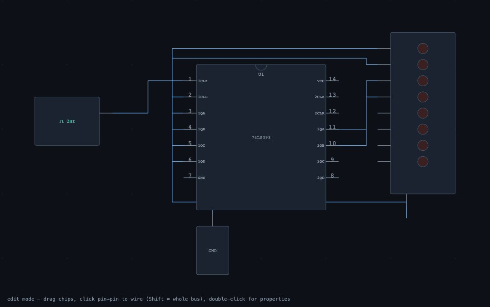
Logic lab: ripple counter — A clock module, half a ripple counter, four LEDs — and no processor at all.
The gentlest board in the set, and the only one with no CPU. A 2 Hz oscillator clocks
one half of a 74LS393 four-bit ripple counter, and its outputs drive four LEDs. That is the entire
design.
It exists to make one idea concrete before any processor appears: a clock edge changes state,
and state drives a display. Everything else in this tool is that idea repeated at scale.
The chips
Part
What it does here
Y1 — OSC
OSC clock module, set to 2 Hz — the only thing on this board that moves on its own
U1 — 74LS393
74LS393 dual four-bit ripple counter; only the first half is used
D1 — LED8
LED bar showing QA…QD as a binary count
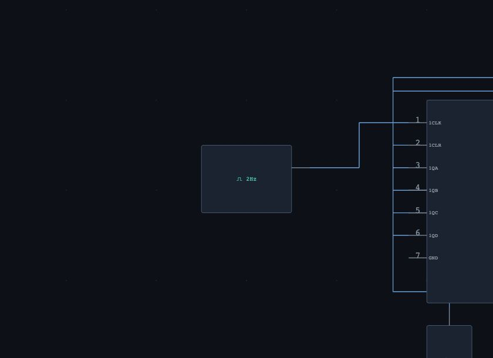
Y1 — OSC — OSC clock module, set to 2 Hz — the only thing on this board that moves on its own
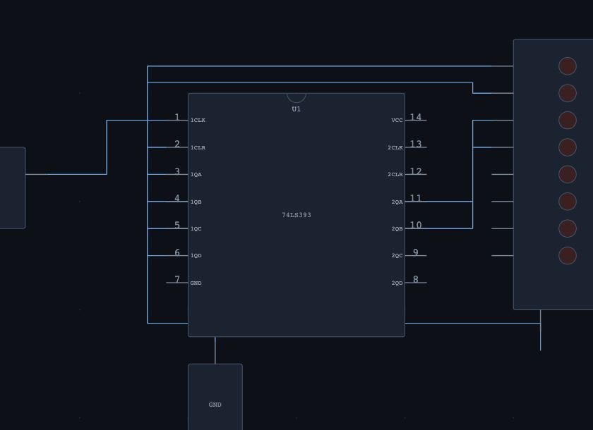
U1 — 74LS393 — 74LS393 dual four-bit ripple counter; only the first half is used
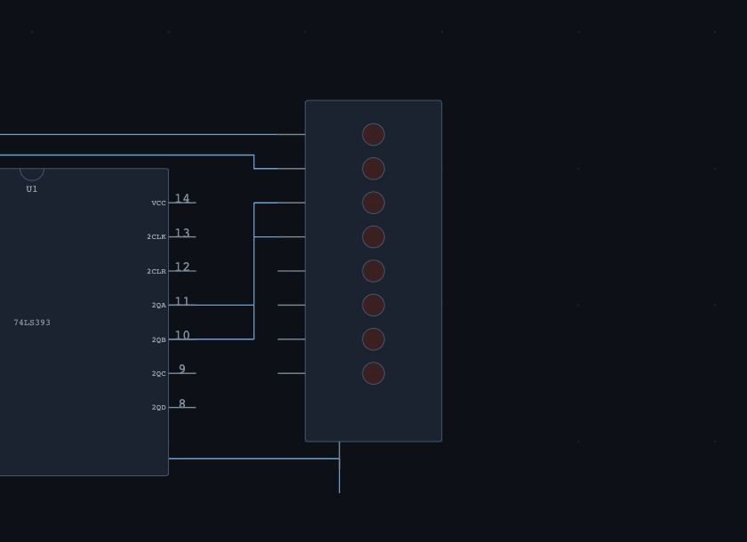
D1 — LED8 — LED bar showing QA…QD as a binary count
The program
None. There is no CPU to run one — the Code tab is unused on this board.
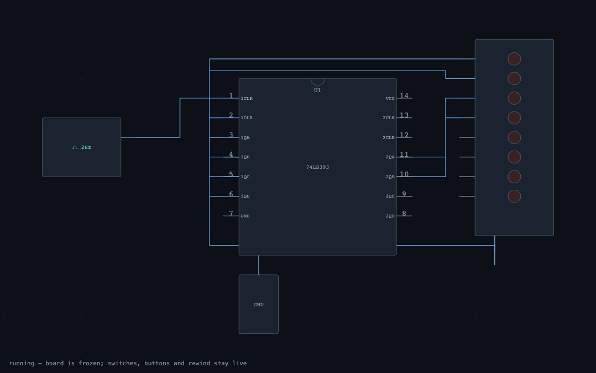
Logic lab: ripple counter — running — The same board with live logic levels on every wire, LEDs lit and displays scanning.
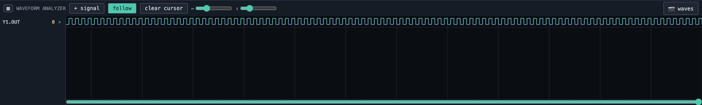
Logic lab: ripple counter — on the analyzer — The signals this board pre-selects for you, captured while it runs.
Try this
Count in binary, slowly
Press Start. The LEDs count 0–15 and roll over. Because it is a ripple
counter, the bits do not change together: QA toggles on every clock, QB on every second, and so
on down the chain.
See the ripple in the analyzer
Add QA, QB, QC and QD to the waveform analyzer (+ signal → the counter → each
output). Zoom in on a rollover from 7 to 8 and you can see the propagation: QA falls, which
clocks QB, which falls and clocks QC. Real ripple counters glitch during that cascade, which is
exactly why synchronous counters exist.
Change time itself
Stop, double-click the oscillator, and set hz to 100. Restart: the low bit
is now a blur while QD still blinks visibly. The simulation's whole timebase follows the fastest
clock chip on the board, so this one change alters what a “half-step” means everywhere.
Break it on purpose
Stop and delete the wire from the counter's 1CLR pin to GND. Run again and
open the Checks tab: a floating TTL input reads as logic 1, and an active-high clear held
high means the counter is permanently reset. The LEDs stay dark. This is the single most common
beginner's bug on real hardware, and here it explains itself.
Minimal 8088 kit
The classic single-board computer: 8284A, 8088, EPROM, SRAM, one latched output port.
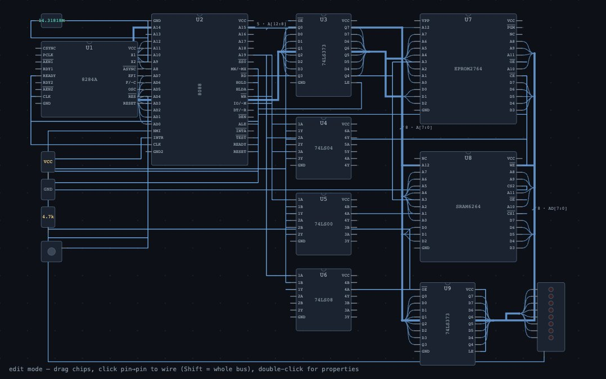
Minimal 8088 kit — The classic single-board computer: 8284A, 8088, EPROM, SRAM, one latched output port.
This is the board every 1980s trainer kit was, reduced to its bones. An 8284A turns a
14.31818 MHz crystal into a 4.77 MHz clock, an 8088 runs from an EPROM, an SRAM holds the stack,
and a single '373 latch drives eight LEDs. Fifteen parts, and a complete computer.
The interesting part is the partial address decoding. There is no proper decoder: the ROM
is selected by NAND(A19, memory-cycle) and the RAM by its inverse. One address line
decides everything, so the ROM answers at every address with A19 high and the RAM at every
address with A19 low. That is not a simplification for teaching — it is what cheap kits actually
did, and the mirrors it creates are visible in the memory map.
The chips
Part
What it does here
U2 — 8088
8088 CPU in minimum mode — it drives ALE, ~RD, ~WR and IO/~M itself
U1 — 8284A
8284A clock generator: crystal ÷3 → CLK, plus a synchronized RESET and READY
U3 — 74LS373
74LS373 address latch — captures AD0-AD7 on ALE, the demultiplexer every 8088 board needs
U7 — EPROM2764
2764 EPROM holding the program and, at FFFF0, the far jump that starts the machine
U8 — SRAM6264
6264 SRAM: the stack and variables
U5 — 74LS00
74LS00 — the entire address decoder, one gate per chip select
U9 — 74LS373
74LS373 output port: latches on any IO write, drives the LEDs
D1 — LED8
Eight LEDs — the machine's only output
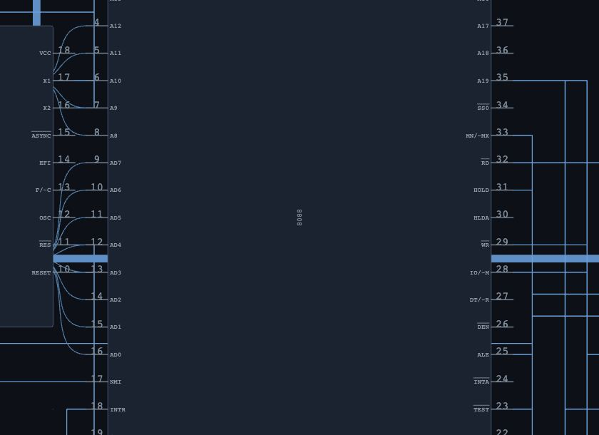
U2 — 8088 — 8088 CPU in minimum mode — it drives ALE, ~RD, ~WR and IO/~M itself
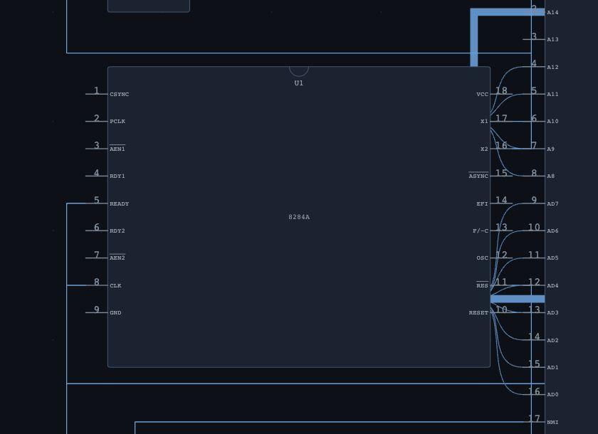
U1 — 8284A — 8284A clock generator: crystal ÷3 → CLK, plus a synchronized RESET and READY
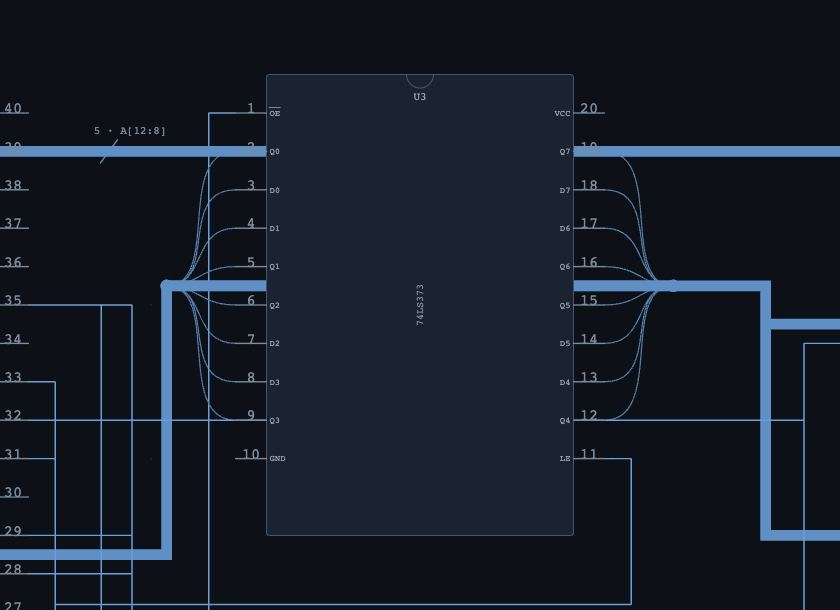
U3 — 74LS373 — 74LS373 address latch — captures AD0-AD7 on ALE, the demultiplexer every 8088 board needs
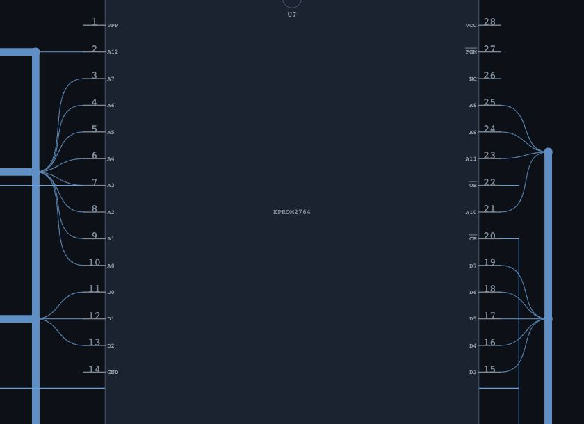
U7 — EPROM2764 — 2764 EPROM holding the program and, at FFFF0, the far jump that starts the machine
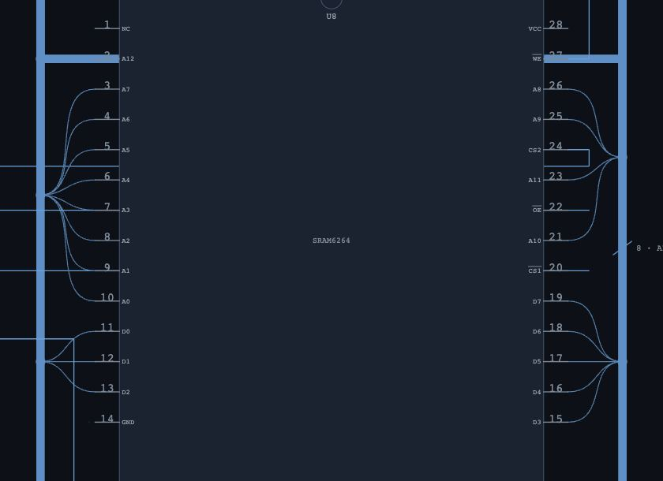
U8 — SRAM6264 — 6264 SRAM: the stack and variables
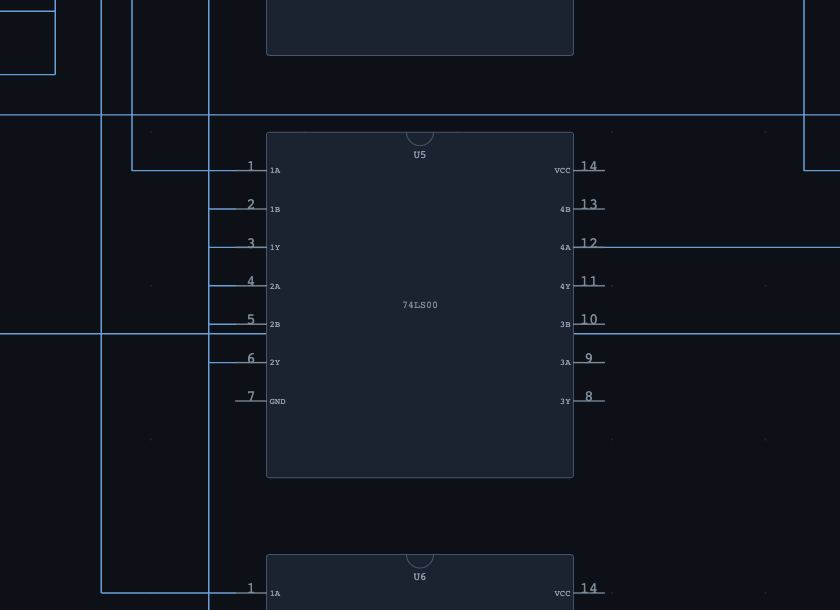
U5 — 74LS00 — 74LS00 — the entire address decoder, one gate per chip select
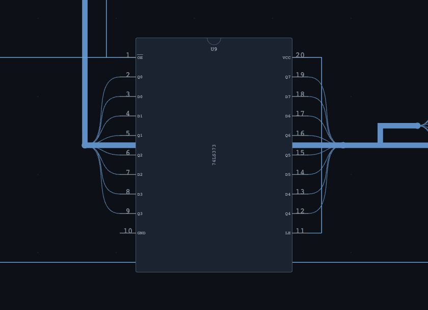
U9 — 74LS373 — 74LS373 output port: latches on any IO write, drives the LEDs
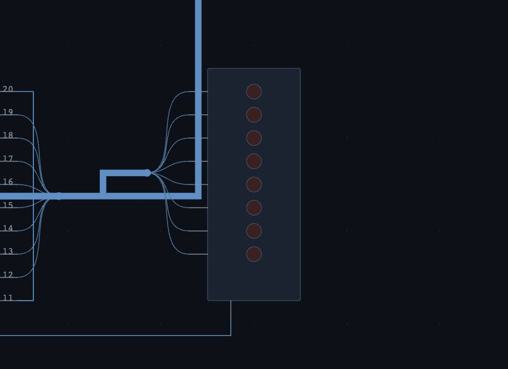
D1 — LED8 — Eight LEDs — the machine's only output
The map
Address / signal
What answers
Memory cycle, A19 = 1
EPROM 2764 (heavily mirrored: only A0-A12 are wired)
Memory cycle, A19 = 0
SRAM 6264 (also mirrored)
Any IO write
The '373 output port — there is no port address decoding at all
Reset vector FFFF0
Inside the ROM: a far jump to F000:E000
The program
A blinker. It writes 55h to the port, delays with a LOOP,
writes AAh, delays, and jumps back — so the LEDs alternate in a checkerboard.
start: mov al, 0x55
out 0x00, al ; any OUT hits the port latch
mov cx, 4
d1: loop d1 ; short delay
mov al, 0xAA
out 0x00, al
mov cx, 4
d2: loop d2
jmp start
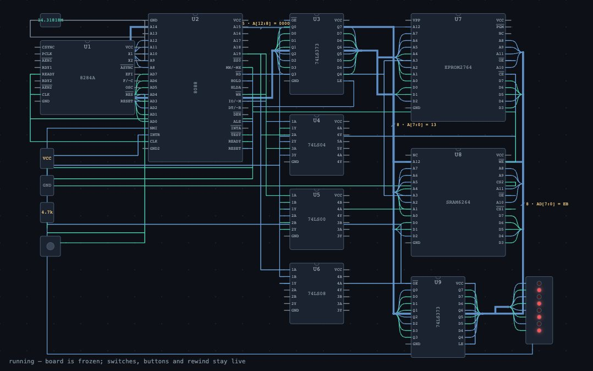
Minimal 8088 kit — running — The same board with live logic levels on every wire, LEDs lit and displays scanning.
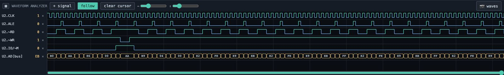
Minimal 8088 kit — on the analyzer — The signals this board pre-selects for you, captured while it runs.
Try this
Watch one bus cycle assemble itself
Start, pause, then press ⭢ cycle repeatedly while watching the analyzer. A memory
read takes four clocks: in T1 the address goes out on AD0-7 and ALE pulses high to latch it; in
T2 the CPU releases AD and drops ~RD; in T3 the ROM drives data back; in T4 the CPU
samples it. Hover ALE during T1 and watch the '373 capture the low address byte.
Find the mirrors
Open ▦ memory and read the range dropdown. The ROM does not appear once — it
appears many times, marked as aliases, because A13-A18 are not decoded at all. Your 8 KB EPROM
occupies half a megabyte of address space. Now you know why every kit manual said “the monitor
lives at F000 — and also at F800, and E000…”.
Prove the port has no address
Change out 0x00, al to out 0x42, al and re-assemble. The LEDs
blink exactly as before. The port latch is enabled by IO/~M AND NOT ~WR — every IO
write in the address space hits it. Add a '138 and gate the latch from one of its outputs if you
want a port that owns an address.
Break the demultiplexer
Stop and delete the wire from the CPU's ALE to the latch's LE.
Run: the machine dies immediately. Without ALE the latch never captures the low address byte, so
A0-A7 into ROM and RAM are frozen at whatever was last there — the CPU fetches the same byte
forever. Press Ctrl+Z, or use ⚡ complete, which will notice the
missing connection and offer to restore it.
Watch the stack move
Double-click the SRAM while the program runs and scroll to the top of the chip. Every
CALL and interrupt pushes there. Add a call to the program and watch
the return address appear byte by byte.
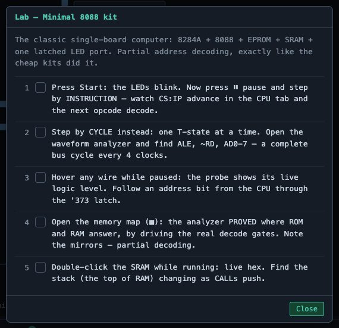
Minimal 8088 kit — the guided lab — This board ships a numbered exercise; the ticks persist as you work through it.
Interrupt & timer lab
8259A and 8253 wired PC-style; the CPU sleeps in HLT and is woken by real interrupts.
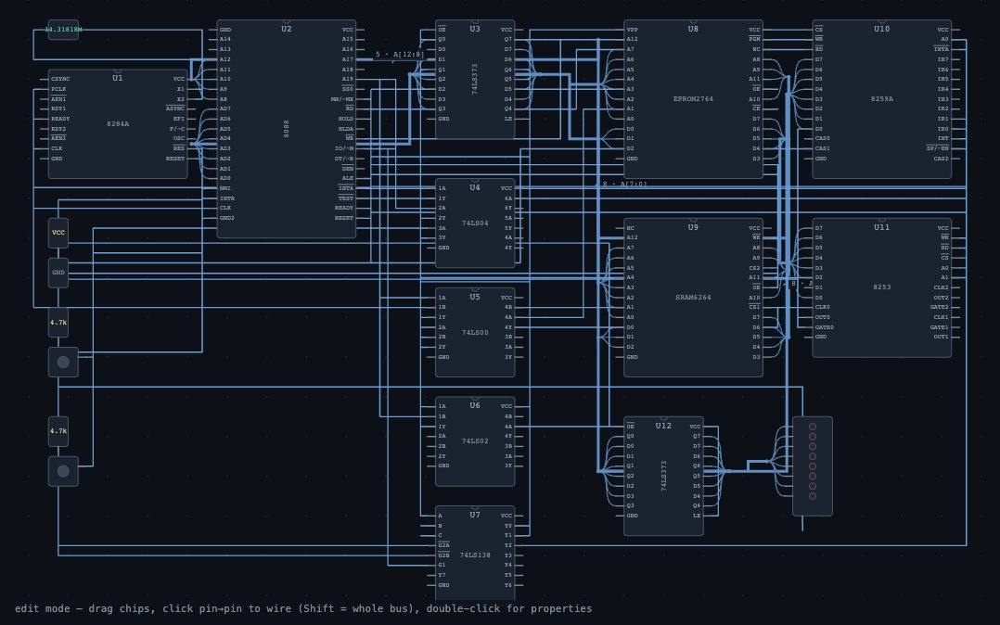
Interrupt & timer lab — 8259A and 8253 wired PC-style; the CPU sleeps in HLT and is woken by real interrupts.
Interrupts are the first thing that feels like magic, so this board makes them visible.
A 74LS138 carves the IO space into 32-port windows: the LED port at 00h, the 8259A interrupt
controller at 20h, and the 8253 timer at 40h — the same addresses the IBM PC used.
The timer's OUT0 goes to the controller's IR0, a button goes to IR1, and the controller's INT
goes to the CPU's INTR. The program spends its life in HLT. Everything that happens,
happens because a wire went high.
The chips
Part
What it does here
U2 — 8088
8088 — sits in HLT and wakes only for interrupts
U10 — 8259A
8259A interrupt controller at ports 20h/21h, master (~SP/~EN strapped high)
U11 — 8253
8253 timer at 40h-43h, channel 0 clocked from the 8284A's PCLK
U7 — 74LS138
74LS138 IO decoder on latched A5-A7 — eight 32-port windows
D3 — BTN
A push button on IR1, pulled up and inverted
D1 — LED8
The LED port at 00h, showing the interrupt count
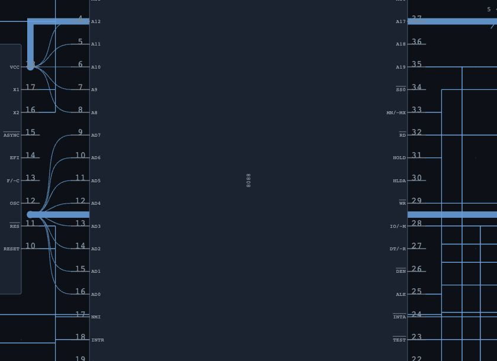
U2 — 8088 — 8088 — sits in HLT and wakes only for interrupts
U11 — 8253 — 8253 timer at 40h-43h, channel 0 clocked from the 8284A's PCLK
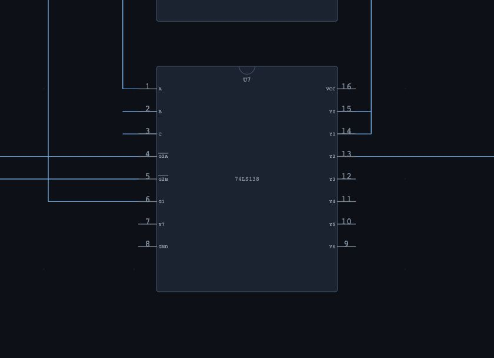
U7 — 74LS138 — 74LS138 IO decoder on latched A5-A7 — eight 32-port windows
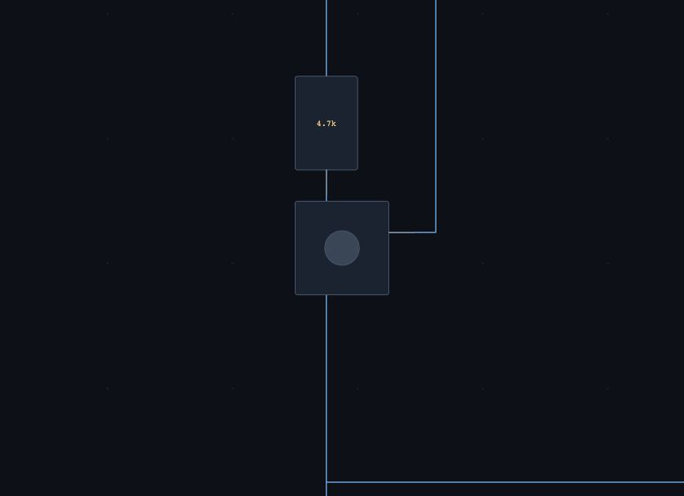
D3 — BTN — A push button on IR1, pulled up and inverted
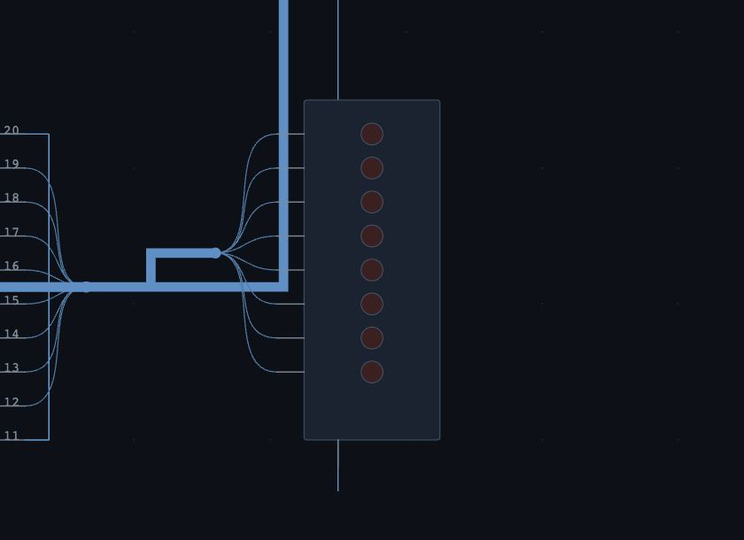
D1 — LED8 — The LED port at 00h, showing the interrupt count
The map
Address / signal
What answers
Ports 00h-1Fh
Y0 → LED output latch
Ports 20h-3Fh
Y1 → 8259A (A0 from latched Q0, so 20h and 21h)
Ports 40h-5Fh
Y2 → 8253 (A0/A1 latched, so 40h-43h)
IR0
8253 OUT0 — the timer tick
IR1
The push button, through an inverter
INTR / ~INTA
8259A INT → CPU INTR; CPU ~INTA → 8259A
The program
It installs handlers for vectors 8 and 9, initializes the 8259A with the PC's own ICW
sequence (base vector 08h), programs timer channel 0 as a mode-3 square wave with divisor 512,
unmasks IR0 and IR1, enables interrupts, and then does nothing but hlt. The timer
handler increments BX and shows the low byte on the LEDs; the button handler flashes all eight.
mov al, 0x13 ; ICW1: edge, single, ICW4 needed
out 0x20, al
mov al, 0x08 ; ICW2: vectors 08-0F
out 0x21, al
mov al, 0x01 ; ICW4: 8086 mode
out 0x21, al
mov al, 0xFC ; unmask IR0 and IR1
out 0x21, al
sti
idle: hlt
jmp idle
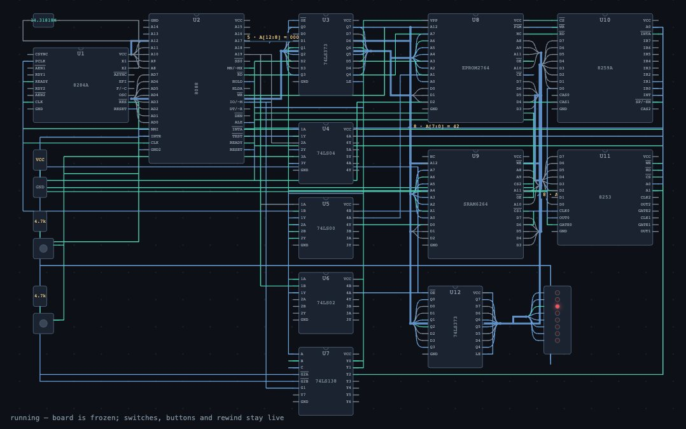
Interrupt & timer lab — running — The same board with live logic levels on every wire, LEDs lit and displays scanning.
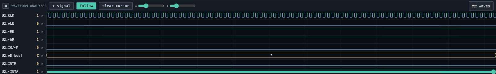
Interrupt & timer lab — on the analyzer — The signals this board pre-selects for you, captured while it runs.
Try this
See the two-pulse INTA handshake
The analyzer already shows INTR and ~INTA on this board. Run for a moment, pause, and
zoom in on an interrupt. INTR rises; the CPU finishes its instruction and answers with
two ~INTA pulses. During the second, the 8259A puts the vector number on AD0-7 — read it
off the bus lane. That byte times four is the address the CPU jumps through.
Mask an interrupt while it is running
Pause and double-click the 8259A. In the IMR grid, set bit 0. Resume: the LEDs stop
counting because the timer's request is now blocked — but watch the IRR grid, where bit 0 keeps
lighting up. The request is arriving; the controller is refusing to forward it. Clear the bit and
the count resumes mid-stride.
Prove the CPU is genuinely asleep
Open the CPU tab while it runs. IP is parked on the hlt and the bus
shows HALT (waiting for interrupt). The 8088 is not spinning in a loop — it has stopped
fetching entirely, and only an interrupt restarts it. Press the IR1 button and watch IP leap
into the handler and come back.
Forget the EOI
Delete the two lines that write 20h to port 20h at the end of the timer
handler, and re-assemble. The board runs exactly once and then goes quiet forever: without an
end-of-interrupt the 8259A believes IR0 is still in service and will not deliver another request
at that level or below. Double-click it and you can see the ISR bit stuck on.
Change the tick rate
Pause, double-click the 8253, and change counter 0's reload value. Resume: the LED count
speeds up or slows down immediately. The timer is a divider — 1.193 MHz ÷ reload —
which is exactly how the PC produced its 18.2 Hz tick.
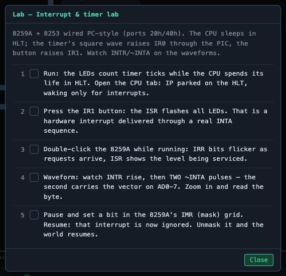
Interrupt & timer lab — the guided lab — This board ships a numbered exercise; the ticks persist as you work through it.
Max-mode 8088 + 8288
MN/~MX strapped low: an 8288 decodes the CPU's status lines into separate command strobes.
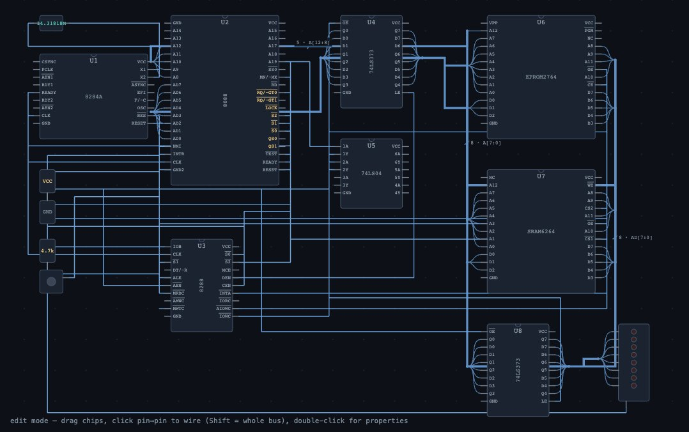
Max-mode 8088 + 8288 — MN/~MX strapped low: an 8288 decodes the CPU's status lines into separate command strobes.
The same blinker as the minimal kit, with the bus plumbing rebuilt. Strapping
MN/~MX to ground changes what eight of the CPU's pins mean: instead of driving ALE,
~RD, ~WR and IO/~M itself, the 8088 emits a three-bit status
code on ~S2..~S0 and lets an 8288 bus controller decode it.
The payoff is separate memory and IO commands — ~MRDC, ~MWTC,
~IORC, ~IOWC — so no gate is needed to qualify a read as memory or IO.
The cost is a chip. Notice that the canvas relabels the CPU's pins the moment the strap is in
place: the tool draws what the pins actually mean.
The chips
Part
What it does here
U2 — 8088
8088 with MN/~MX tied low — its pins now carry status, not commands
U3 — 8288
8288 bus controller: decodes ~S2..~S0 into ALE and four command strobes
U4 — 74LS373
74LS373 latch — now clocked by the 8288's ALE, not the CPU's
U6 — EPROM2764
2764 EPROM, selected by A19 alone (no IO/~M gating needed)
U7 — SRAM6264
6264 SRAM at A19 = 0
U8 — 74LS373
The output port, latched by ~IOWC through an inverter
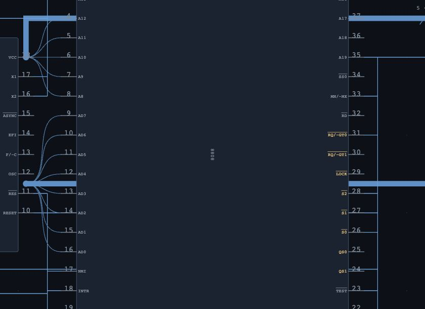
U2 — 8088 — 8088 with MN/~MX tied low — its pins now carry status, not commands
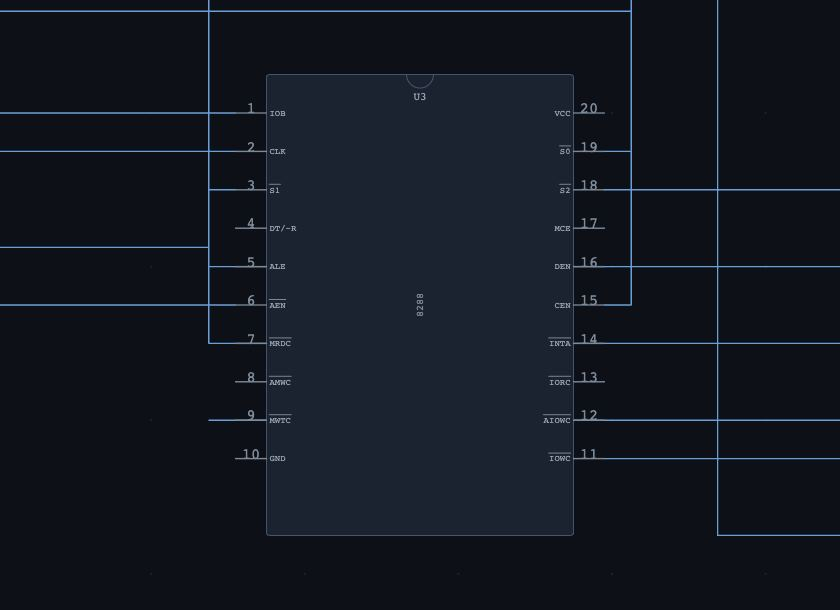
U3 — 8288 — 8288 bus controller: decodes ~S2..~S0 into ALE and four command strobes
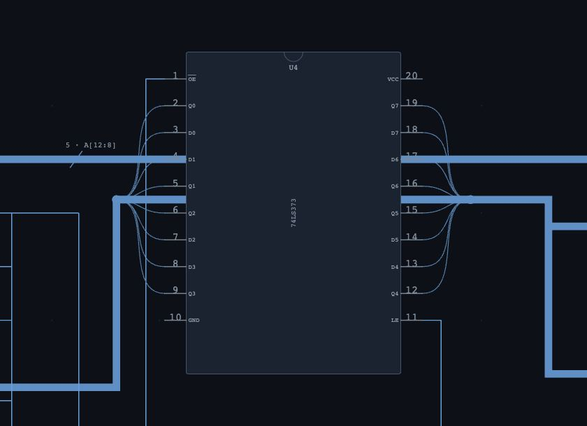
U4 — 74LS373 — 74LS373 latch — now clocked by the 8288's ALE, not the CPU's
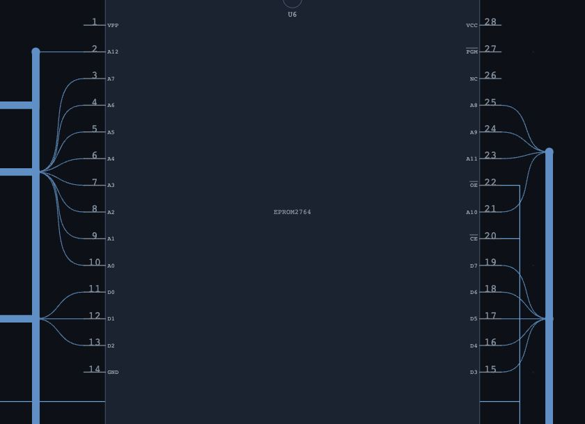
U6 — EPROM2764 — 2764 EPROM, selected by A19 alone (no IO/~M gating needed)
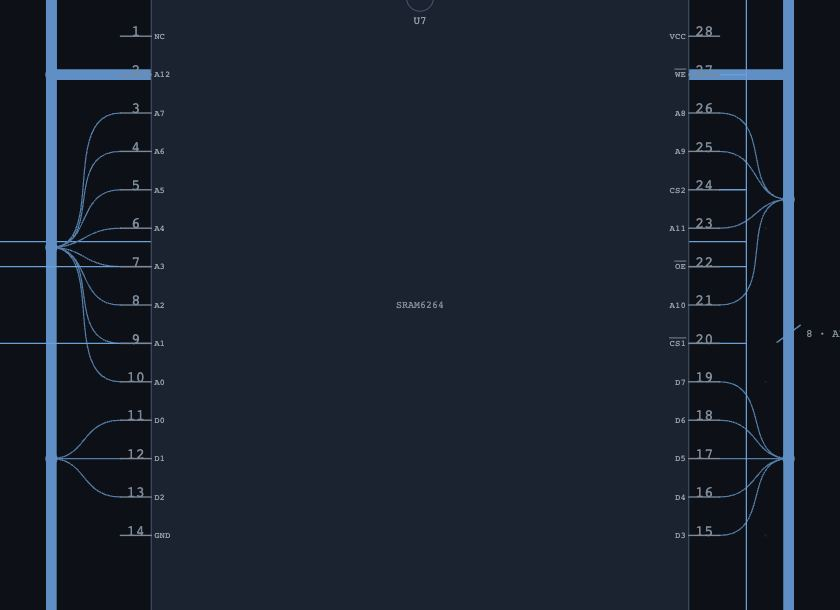
U7 — SRAM6264 — 6264 SRAM at A19 = 0
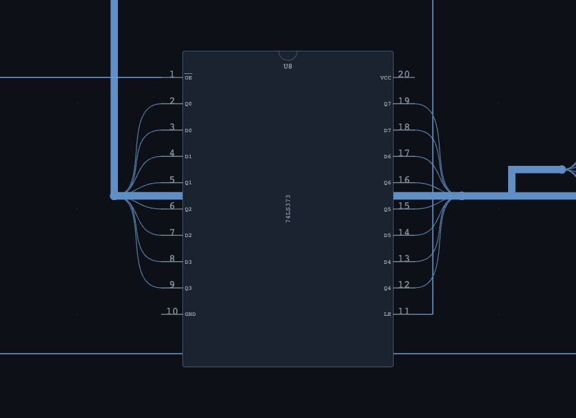
U8 — 74LS373 — The output port, latched by ~IOWC through an inverter
The map
Address / signal
What answers
Memory read
~MRDC → ROM ~OE and RAM ~OE
Memory write
~MWTC → RAM ~WE
IO write
~IOWC → the output port latch
Chip selects
ROM at A19 = 1, RAM at A19 = 0 — no cycle-type gating, the commands separate them
The program
Identical to the minimal kit's blinker. That is the point: the same software, entirely
different bus hardware.
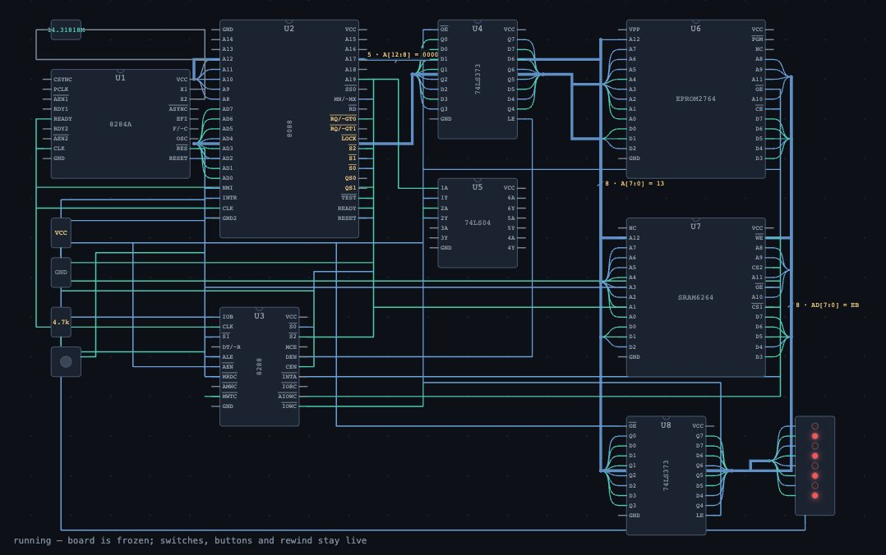
Max-mode 8088 + 8288 — running — The same board with live logic levels on every wire, LEDs lit and displays scanning.Max-mode 8088 + 8288 — on the analyzer — The signals this board pre-selects for you, captured while it runs.
Try this
Read the status code
Add ~S0, ~S1 and ~S2 to the analyzer and step by
cycle. The three bits together name the cycle: 100 is a code fetch, 101 a memory read, 110 a
memory write, 010 an IO write, 111 passive. The 8288 is a decoder watching those three wires.
Compare the two boards side by side
Put ALE and ~MRDC on screen here, then load Minimal 8088
kit and put ALE and ~RD on screen there. Same program, same
timing, different origin: on the minimal kit those pulses come out of the CPU, here they come out
of the controller one gate delay later.
Pull the strap
Stop, delete the wire from MN/~MX to GND, and re-run. The CPU is now in
minimum mode and drives min-mode signals from those pins, but the board is still listening to the
8288 — which sees garbage status and issues nothing. The machine is silent. Watch the canvas
relabel the pins the instant the strap disappears.
See why max mode exists
Open the Dual 8088 board. Two processors share one memory, which is only possible
because max mode also gives you ~LOCK and lets an 8289 arbiter gate the commands.
Max mode is not about convenience — it is what makes a multi-master bus possible.
8086 word machine (byte lanes)
A true 16-bit bus: two byte banks, ~BHE and A0 deciding which one is written.
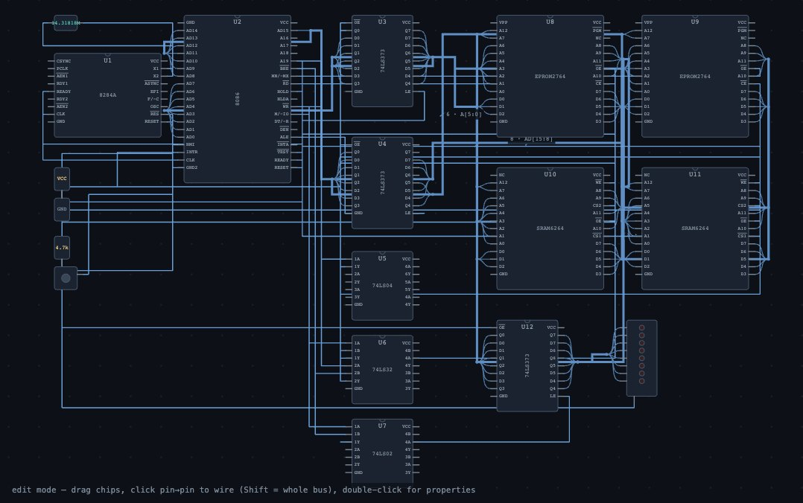
8086 word machine (byte lanes) — A true 16-bit bus: two byte banks, ~BHE and A0 deciding which one is written.
The 8086 moves sixteen bits at once, which forces a question the 8088 never has to
answer: when the program writes a single byte, which half of memory should be enabled? The answer
is two banks — even addresses on D0-D7, odd on D8-D15 — with the write to each bank gated
separately.
Here ~WE on the low bank is ~WR OR A0, and on the high bank it is
~WR OR ~BHE. Address bit 0 never reaches the memories at all: the banks are addressed
by A1 upward, because each holds every other byte.
The chips
Part
What it does here
U2 — 8086
8086 in minimum mode — sixteen multiplexed AD lines and a ~BHE pin
U3 — 74LS373
74LS373 latching AD0-AD7
U4 — 74LS373
74LS373 latching AD8-AD15 — an 8086 needs two
U10 — SRAM6264
Low bank: even addresses, wired to D0-D7
U11 — SRAM6264
High bank: odd addresses, wired to D8-D15
U6 — 74LS32
74LS32 gates producing the per-bank write enables from ~WR, A0 and ~BHE
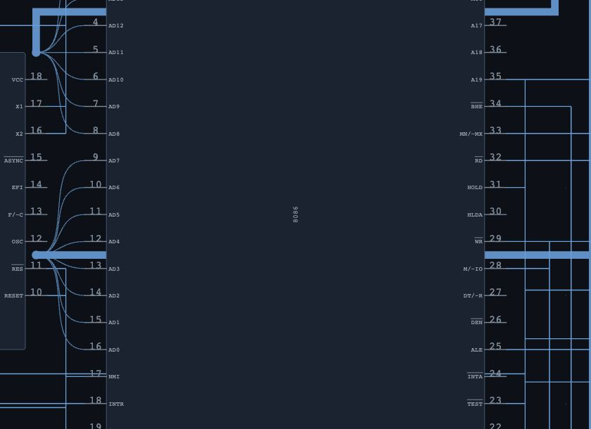
U2 — 8086 — 8086 in minimum mode — sixteen multiplexed AD lines and a ~BHE pin
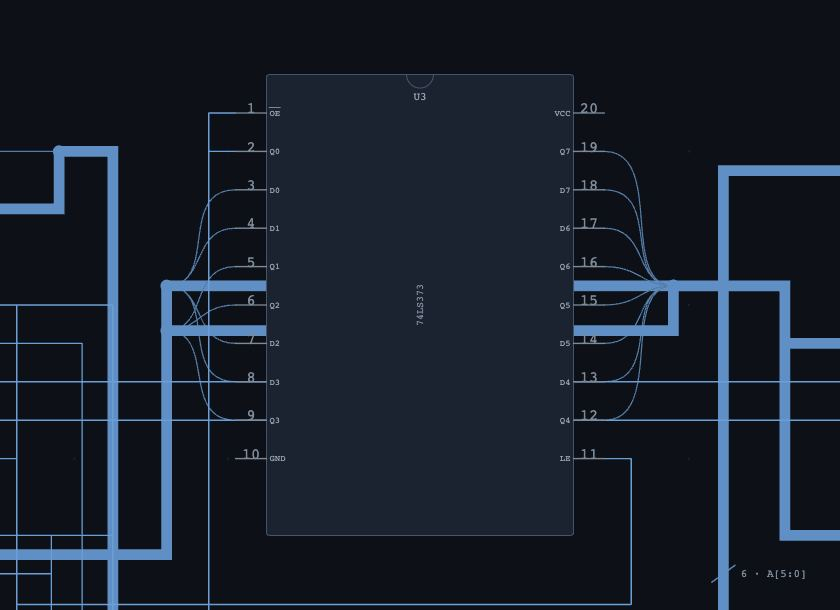
U3 — 74LS373 — 74LS373 latching AD0-AD7
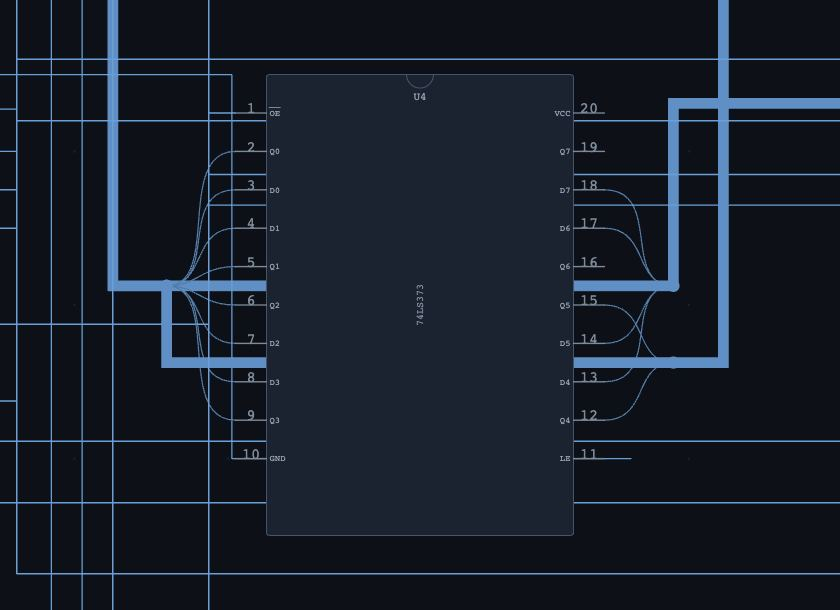
U4 — 74LS373 — 74LS373 latching AD8-AD15 — an 8086 needs two
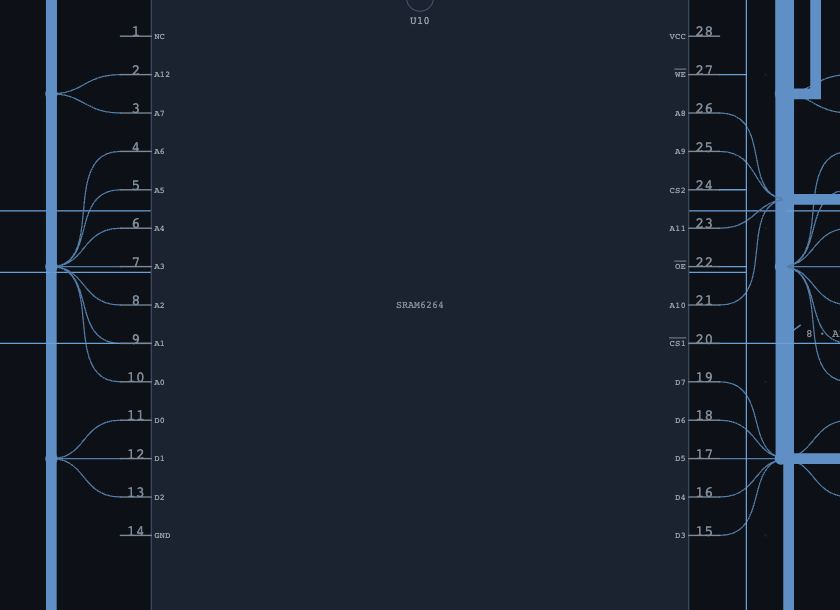
U10 — SRAM6264 — Low bank: even addresses, wired to D0-D7
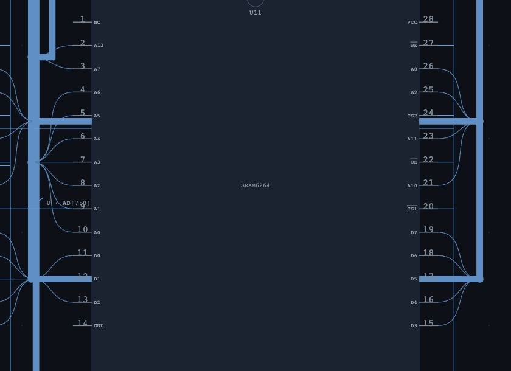
U11 — SRAM6264 — High bank: odd addresses, wired to D8-D15
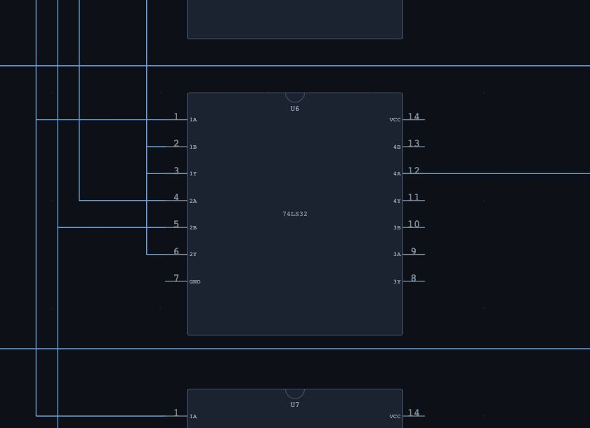
U6 — 74LS32 — 74LS32 gates producing the per-bank write enables from ~WR, A0 and ~BHE
The map
Address / signal
What answers
Even byte
A0 = 0, ~BHE = 1 → low bank only
Odd byte
A0 = 1, ~BHE = 0 → high bank only
Aligned word
A0 = 0, ~BHE = 0 → both banks, one bus cycle
Chip addressing
Chip A0 ← system A1, and so on — the banks never see A0
The program
It writes an aligned word to [0x100], then a misaligned word to
[0x103], then runs the usual blinker. Those two stores are the whole lesson.
mov word [0x100], 0x1234 ; aligned: ONE bus cycle
mov word [0x103], 0x5678 ; odd: TWO byte cycles
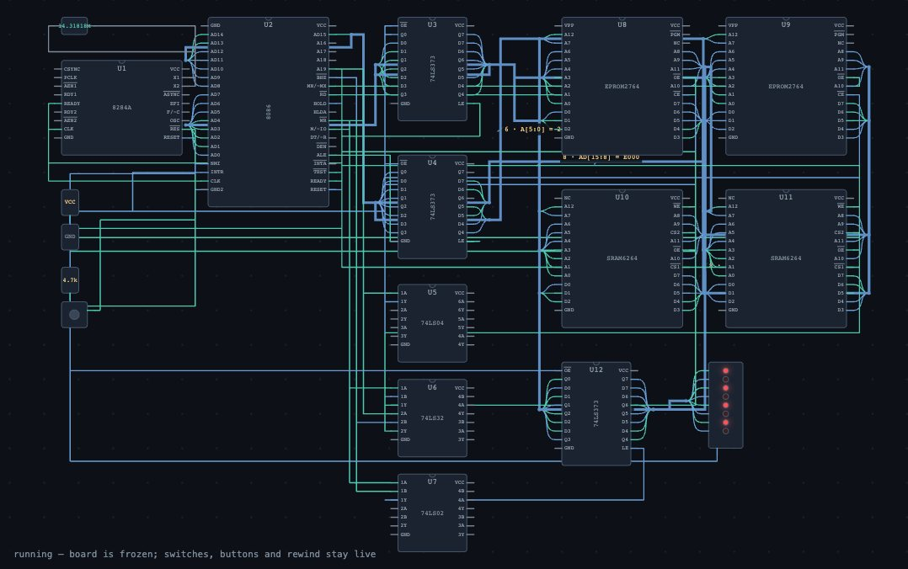
8086 word machine (byte lanes) — running — The same board with live logic levels on every wire, LEDs lit and displays scanning.
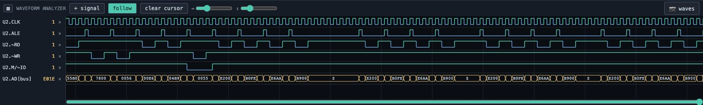
8086 word machine (byte lanes) — on the analyzer — The signals this board pre-selects for you, captured while it runs.
Try this
Count the cycles for yourself
Put ALE and ~WR on the analyzer, then step by instruction over
those two stores. The aligned word produces one ALE pulse and one write. The misaligned word
produces two — the 8086 splits it into a byte to the high bank and a byte to the low bank
of the next word. That is the entire performance argument for alignment, visible on a wire.
Watch ~BHE do its job
Add ~BHE and A0 (from the latch) to the analyzer. During a byte
write to an even address, ~BHE stays high and only the low bank's ~WE goes active. Hover the high
bank's ~WE pin during that cycle: it never drops. Without that gating, a byte write
would corrupt its neighbour.
Corrupt memory on purpose
Stop and delete the wire feeding ~BHE into its OR gate. That input now floats
high, which permanently blocks the high bank's writes — odd bytes vanish. Or wire the gate's
input to ground instead and both banks write on every cycle: now every byte store also destroys
the byte beside it. Check the result in the unified memory view.
See the fetch pattern
The 8086 prefetches whole words at even addresses only. Watch the AD bus lane during
instruction fetches — you will see two-byte reads at even addresses, which is why its queue is
six bytes deep while the 8088's is four.
Hercules video kit
An 8088 writing characters straight into video memory, with the picture live on the board.
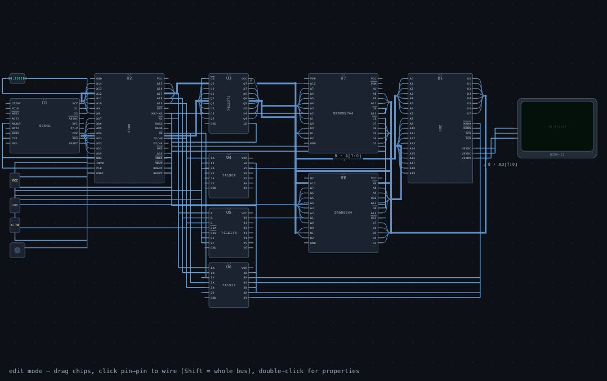
Hercules video kit — An 8088 writing characters straight into video memory, with the picture live on the board.
No BIOS, no operating system, no driver. The Hercules card owns 32 KB of memory at
B0000 and a handful of ports at 3B4-3BF, and the program simply stores bytes there. Character,
attribute, character, attribute — the card scans that memory and turns it into video.
This board also shows what an “ISA-style” bus looks like on a kit. The card wants separate
~MEMR, ~MEMW, ~IOR and ~IOW, so four OR gates
qualify the CPU's ~RD and ~WR with IO/~M — the cheapest
possible way to synthesize a card bus from a minimum-mode CPU.
The chips
Part
What it does here
D1 — HGC
Hercules card: 32 KB of video RAM at B0000, a 6845-style CRTC, real HSYNC/VSYNC/VIDEO outputs
D2 — CRT
The monochrome monitor — double-click it for a full phosphor screen
U6 — 74LS32
74LS32: four gates turning ~RD/~WR plus IO/~M into the card's four command strobes
U5 — 74LS138
74LS138 on A17-A19 — a proper decoder, because the video window must not collide with ROM
U2 — 8088
8088 driving the whole address bus into the card: A0-A7 latched, A8-A19 direct
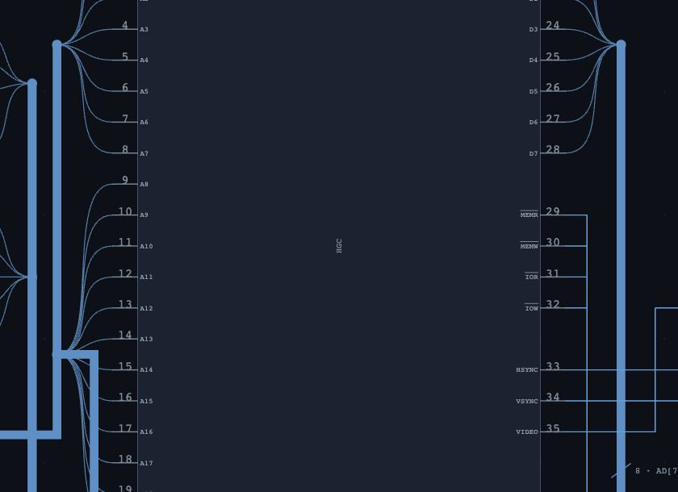
D1 — HGC — Hercules card: 32 KB of video RAM at B0000, a 6845-style CRTC, real HSYNC/VSYNC/VIDEO outputs
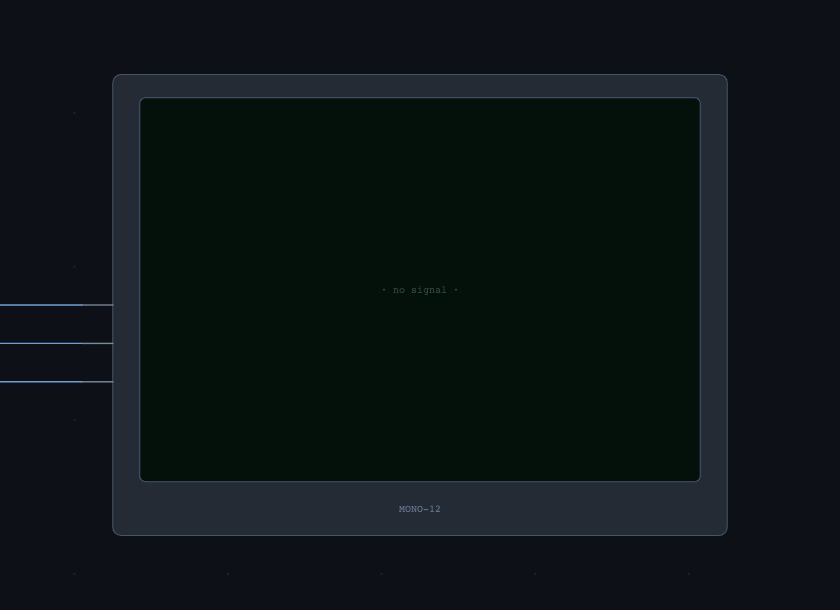
D2 — CRT — The monochrome monitor — double-click it for a full phosphor screen
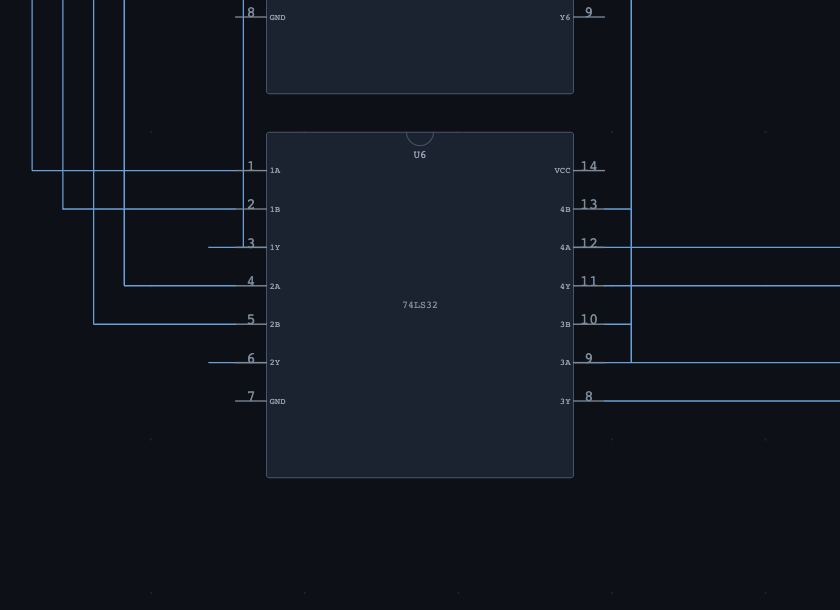
U6 — 74LS32 — 74LS32: four gates turning ~RD/~WR plus IO/~M into the card's four command strobes
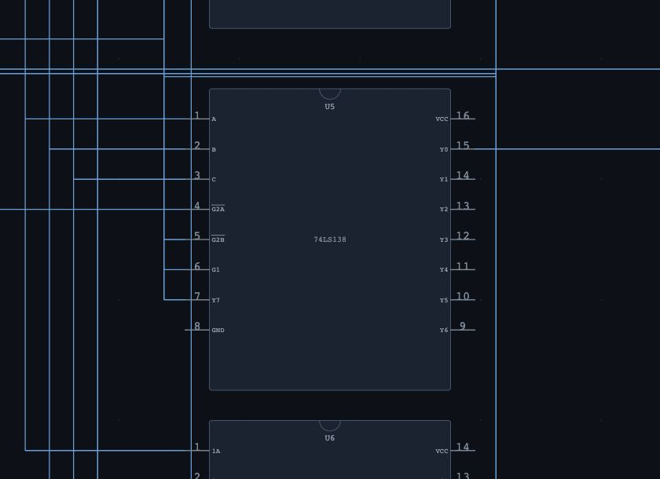
U5 — 74LS138 — 74LS138 on A17-A19 — a proper decoder, because the video window must not collide with ROMU2 — 8088 — 8088 driving the whole address bus into the card: A0-A7 latched, A8-A19 direct
The map
Address / signal
What answers
B0000-B7FFF
Video RAM, self-decoded by the card
Ports 3B4/3B5
CRTC index and data registers
Port 3B8
Mode register — video enable, graphics/text, blink
00000-1FFFF (Y0)
SRAM
E0000-FFFFF (Y7)
EPROM
The program
It points ES at B000, walks a string with lodsb/stosb writing
each character followed by attribute 07h, then sits in a loop incrementing one character in place
with a bright attribute so you can see the machine is still alive.
Hercules video kit — running — The same board with live logic levels on every wire, LEDs lit and displays scanning.Hercules video kit — on the analyzer — The signals this board pre-selects for you, captured while it runs.
Try this
Write to the screen by hand
Run the board, then open ▦ memory and go to B0000. Type a byte — say
41 — into the first cell. The letter A appears on the monitor immediately. The next
byte is its attribute: try 0F for bright, 70 for reverse video,
01 for underline.
Turn the video off from the port
Pause and double-click the HGC. Clear bit 3 of the mode register (3B8) and resume: the
screen goes black although the memory still holds the text. Set it again and the picture returns
untouched. That bit is a blanking control, not a clear.
Watch the scan
Add HSYNC and VSYNC to the analyzer. HSYNC is the line rate;
VSYNC pulses once per frame, and between them the card is walking the frame buffer. Zoom out and
the frame structure appears as a clean repeating envelope.
Cut one strobe
Stop and delete the wire into the card's ~MEMW. Run again: the program's
stores go nowhere and the screen never fills, but the CPU runs happily — it has no idea its
writes are being ignored. This is exactly the failure mode that used to eat afternoons with a
scope, and it takes about ten seconds to find here by hovering the pin.
Draw with the attribute byte
Change the program's attribute from 0x07 to 0x70 and
re-assemble. The whole message becomes reverse video. Attributes are per character cell — the
entire text-mode colour model of the PC in one byte.
PC typewriter (keyboard + video)
Scancodes travel a serial line, shift into a register, raise IRQ1, and land on screen.
PC typewriter (keyboard + video) — Scancodes travel a serial line, shift into a register, raise IRQ1, and land on screen.
The XT keyboard protocol is beautifully primitive: the keyboard drives a clock and a data
line, and the machine shifts eight bits in. There is no controller chip in the modern sense — just
a shift register and an interrupt.
Here the keyboard's KDATA and KCLK feed a '322-style shift register; when eight bits have
arrived it asserts FULL, which is wired to IR1 on the 8259A. The handler reads the assembled byte
from the 8255's port A at 60h, acknowledges by pulsing PB7 to clear the register, translates the
scancode, and writes a character into video memory.
The chips
Part
What it does here
D2 — XTKBD
The XT keyboard itself — type on your real keyboard and these keys depress
D1 — KBDSHIFT
Shift register: eight serial bits in, a parallel byte out, FULL when ready
U11 — 8255
8255 at 60h — port A reads the scancode, PB7 acknowledges it
U10 — 8259A
8259A: FULL arrives on IR1, the PC's keyboard interrupt
D3 — HGC
Hercules card — where the typed characters end up
D4 — CRT
The monitor; double-click it to get the on-screen keyboard too
D2 — XTKBD — The XT keyboard itself — type on your real keyboard and these keys depressD1 — KBDSHIFT — Shift register: eight serial bits in, a parallel byte out, FULL when readyU11 — 8255 — 8255 at 60h — port A reads the scancode, PB7 acknowledges itU10 — 8259A — 8259A: FULL arrives on IR1, the PC's keyboard interruptD3 — HGC — Hercules card — where the typed characters end upD4 — CRT — The monitor; double-click it to get the on-screen keyboard too
The map
Address / signal
What answers
Ports 20h/21h
8259A
Ports 60h-63h
8255 — 60h port A (scancode), 61h port B (PB7 = acknowledge), 63h control
IR1
Shift register FULL
B0000
Video RAM
The program
It initializes the 8259A and the 8255, unmasks only IR1, prints a banner, and halts.
Everything after that happens in the interrupt handler: read 60h, pulse the acknowledge, ignore
break codes (bit 7 set), translate through a scancode table, write character plus attribute to
video memory, advance the cursor, and handle Return by rounding up to the next row.
kb_isr: in al, 0x60 ; the assembled scancode
mov al, 0x80
out 0x61, al ; pulse PB7 to clear the shift register
xor al, al
out 0x61, al
PC typewriter (keyboard + video) — running — The same board with live logic levels on every wire, LEDs lit and displays scanning.PC typewriter (keyboard + video) — on the analyzer — The signals this board pre-selects for you, captured while it runs.
Try this
Watch a keystroke bit by bit
Add KCLK and KDATA to the analyzer, run the board, and press one
key. Zoom in: eight clock pulses, with data valid on each. You are looking at a single scancode
crossing a wire one bit at a time, at roughly 16 kHz.
Type on the real thing
Double-click the monitor. The CRT window opens with an on-screen XT keyboard docked
beneath it, and physical typing is captured too. Watch the keys depress on the schematic symbol
as you type — the drawing is live.
Forget to acknowledge
Delete the two out 0x61 instructions from the handler and re-assemble. The
first keystroke works; the second never arrives. The shift register is still full, so it will not
accept another byte and FULL never falls, so IR1 never edges again. One missing pulse, one dead
keyboard.
Read the scancode table
Scancodes are positional, not alphabetical: Q is 10h because of where it sits on the
keyboard. Find sctab in the program — that is the translation table every PC BIOS
has carried since 1981.
Serial console (8250 UART)
Polled serial IO exactly as a BIOS did it: check the status bit, then move a byte.
Serial console (8250 UART) — Polled serial IO exactly as a BIOS did it: check the status bit, then move a byte.
An 8250 UART card sits at 3F8h and decodes itself, so the board needs no IO decoder at
all — only gates to qualify the CPU's read and write strobes as IO cycles. Everything else is
software.
The program never uses an interrupt. It polls the Line Status Register: bit 5 says the
transmitter is empty, bit 0 says a byte has arrived. That is how INT 14h worked, and
it is the simplest correct way to drive a serial port.
The chips
Part
What it does here
D1 — COM8250
8250 UART, self-decoding at 3F8h-3FFh, with a live terminal behind a double-click
U6 — 74LS32
74LS32 qualifying ~RD/~WR into ~IOR/~IOW for the card
U2 — 8088
8088 — full A0-A9 into the card so it can decode its own address
D1 — COM8250 — 8250 UART, self-decoding at 3F8h-3FFh, with a live terminal behind a double-clickU6 — 74LS32 — 74LS32 qualifying ~RD/~WR into ~IOR/~IOW for the cardU2 — 8088 — 8088 — full A0-A9 into the card so it can decode its own address
The map
Address / signal
What answers
3F8h
Data register (or divisor low, when DLAB is set)
3F9h
Interrupt enable (or divisor high)
3FBh
Line control — 8N1, and the DLAB bit
3FDh
Line status — bit 5 transmit empty, bit 0 data ready
The program
It sets DLAB, writes divisor 12 for 9600 baud, clears DLAB with 8N1, prints a banner,
then echoes forever: poll for a received byte, send it back, and add a line feed after a carriage
return.
putc: mov dx, 0x3FD
w1: in al, dx
test al, 0x20 ; transmitter empty?
jz w1
mov dx, 0x3F8
out dx, al
ret
Serial console (8250 UART) — running — The same board with live logic levels on every wire, LEDs lit and displays scanning.Serial console (8250 UART) — on the analyzer — The signals this board pre-selects for you, captured while it runs.
Try this
Talk to it
Run the board and double-click the COM card. A green phosphor terminal opens with the
banner already printed. Type: the 8088 is polling, sees your byte, and echoes it. You are the
other end of a serial cable.
Change the baud rate mid-flight
Pause, double-click the UART, and change the baud divisor. The programmer's view shows the
resulting rate — 1843200 ÷ (16 × divisor). Divisor 12 gives 9600; try 96 for 1200.
Nothing else on the board changes.
Remove the polling
Delete the test al, 0x20 / jz pair so the program writes without
waiting. It still appears to work here, because the model's transmitter is always ready — which
is a good moment to notice that a simulator can be kinder than hardware. On a real 8250 at 1200
baud, that loop is the only thing preventing dropped characters.
Watch an IO cycle
Add ~IOR and ~IOW (the gate outputs) to the analyzer. Every
poll of the status register is a full bus cycle — you can literally count how much of the CPU's
life is spent asking “are you ready yet?”. That is the argument for interrupts, in picture form.
PC/XT — boots FreeDOS
A complete XT-class machine, wired chip by chip, that POSTs and boots FreeDOS.
PC/XT — boots FreeDOS — A complete XT-class machine, wired chip by chip, that POSTs and boots FreeDOS.
This is the whole thing: an 8088, DMA controller, interrupt controller, timer, PPI,
floppy controller, XT-IDE fixed disk, serial port, Hercules video, keyboard and speaker — thirty
parts on one canvas, wired the way IBM wired them. GLaBIOS runs from the EPROM, POSTs the machine,
reads the boot sector over DMA channel 2, and FreeDOS 1.3 comes up on the phosphor.
Nothing here is a shortcut. The floppy controller really moves sectors through the 8237's
channel 2. The keyboard really shifts bits. The POST beep really comes from timer channel 2 gated
by a PPI bit through an AND gate into the speaker. If you can find it in a technical reference
manual, it is on this canvas.
The chips
Part
What it does here
U2 — 8088
8088 at 4.77 MHz — the machine's whole reason for existing
U12 — 8237A
8237A DMA controller at 00h; page registers at 80h, where POST codes appear
8253 at 40h: channel 0 the system tick, channel 1 DRAM refresh, channel 2 the speaker
U16 — 8255
8255 at 60h — keyboard port, speaker gate, and the configuration switches
D3 — UPD765
µPD765 floppy controller at 3F0h with the FreeDOS diskette in the drive
D4 — XTIDE
XT-IDE fixed disk card at 300h
D8 — HGC
Hercules video card
U10 — EPROM2764
GLaBIOS in an EPROM at F000
U19 — EPROM27128
The XT-IDE option ROM in its own 16 KB window at D0000
U11 — SRAM628512
512 KB of SRAM from 00000
D1 — SPKR
The speaker: PIT OUT2 ANDed with PPI PB1
U2 — 8088 — 8088 at 4.77 MHz — the machine's whole reason for existingU12 — 8237A — 8237A DMA controller at 00h; page registers at 80h, where POST codes appearU13 — 8259A — 8259A at 20h — IRQ0 timer, IRQ1 keyboard, IRQ4 serial, IRQ6 floppyU14 — 8253 — 8253 at 40h: channel 0 the system tick, channel 1 DRAM refresh, channel 2 the speakerU16 — 8255 — 8255 at 60h — keyboard port, speaker gate, and the configuration switchesD3 — UPD765 — µPD765 floppy controller at 3F0h with the FreeDOS diskette in the driveD4 — XTIDE — XT-IDE fixed disk card at 300hD8 — HGC — Hercules video cardU10 — EPROM2764 — GLaBIOS in an EPROM at F000U19 — EPROM27128 — The XT-IDE option ROM in its own 16 KB window at D0000U11 — SRAM628512 — 512 KB of SRAM from 00000D1 — SPKR — The speaker: PIT OUT2 ANDed with PPI PB1
The map
Address / signal
What answers
00000-7FFFF
512 KB RAM
B0000-B7FFF
Hercules video RAM
D0000-D3FFF
XT-IDE option ROM (a second '138 carves this out of the C0000 window)
E0000-FFFFF
GLaBIOS
Ports 00h / 80h
8237A DMA / page and POST registers
Ports 20h, 40h, 60h
8259A, 8253, 8255
Ports 300h, 3F0h, 3F8h
XT-IDE, floppy, COM1
The program
None — and that is the point. The Code tab is unused; this machine runs its own BIOS
out of ROM exactly like the real thing. POST, then INT 19h, then the boot sector at
0000:7C00, then FreeDOS.
PC/XT — boots FreeDOS — running — The same board with live logic levels on every wire, LEDs lit and displays scanning.PC/XT — boots FreeDOS — on the analyzer — The signals this board pre-selects for you, captured while it runs.
Try this
Boot it
Press Start, then ⚡ turbo, and wait. GLaBIOS POSTs, counts memory, finds
the drives, and loads FreeDOS. Then type at it — your keystrokes travel the serial keyboard
protocol into IRQ1 exactly like every other key on this board.
Read the POST codes
Double-click the 8237A while it boots. The first field is POST code (port 80h) —
the same port real machines put on a diagnostic card. Watch it step through the BIOS's checkpoints
as the machine comes up.
Watch DMA move a sector
Double-click the floppy controller while DOS is listing a directory. The sector counters
climb and the track number moves. Now double-click the 8237A: channel 2's address and count
registers are being decremented by the transfer. The CPU is not copying those bytes — the DMA
controller is.
Hear the beep
The POST beep is not a sound file. Timer channel 2 generates a square wave, PPI port B bit
1 gates it through an AND gate, and the result drives the speaker cone. Double-click the speaker
to see the measured frequency and to actually listen.
Change the machine's configuration
The DIP switch pack tells the BIOS what hardware is installed. Flip a switch while the
machine runs, then reset it: the POST reports a different configuration. That is what those
switches did on a real motherboard.
Boot something else
Open 🖴 disks, import your own .img, and insert it. Or attach the
synthesized FreeDOS hard disk and boot with no floppy at all — the tool builds that image on
demand, MBR and all.
PC/XT — boots FreeDOS — the guided lab — This board ships a numbered exercise; the ticks persist as you work through it.
Dual 8088 — shared RAM (8289)
Two processors, one memory, and an arbiter deciding who owns the bus.
Dual 8088 — shared RAM (8289) — Two processors, one memory, and an arbiter deciding who owns the bus.
Two complete 8088 clusters — each with its own clock, 8288 controller, 8289 arbiter,
latch and buffers — share a single ROM and RAM. Only one may drive the shared bus at a time, and
the 8289s decide between them using an open-collector ~BUSY line and a priority chain.
There is no cache, no coherence protocol, no memory barrier. There is a bus, and a rule about
who may use it. Both processors boot the same ROM and race for a claim byte with a single
XCHG — which is atomic only because the CPU asserts ~LOCK and the arbiter
honours it.
The chips
Part
What it does here
U7 — 8088
Processor A — top priority in the arbitration chain
U9 — 8289
8289 arbiter A: ~BPRN grounded, so it wins ties
U8 — 8288
8288 A — its commands are gated by the arbiter's ~AEN
U14 — 8088
Processor B — takes the bus only when A releases it
U16 — 8289
8289 arbiter B, its ~BPRN fed from A's ~BPRO
U2 — SRAM6264
The shared SRAM both processors write into
D1 — LED8
The output port showing whichever counter was updated last
U7 — 8088 — Processor A — top priority in the arbitration chainU9 — 8289 — 8289 arbiter A: ~BPRN grounded, so it wins tiesU8 — 8288 — 8288 A — its commands are gated by the arbiter's ~AENU14 — 8088 — Processor B — takes the bus only when A releases itU16 — 8289 — 8289 arbiter B, its ~BPRN fed from A's ~BPROU2 — SRAM6264 — The shared SRAM both processors write intoD1 — LED8 — The output port showing whichever counter was updated last
The map
Address / signal
What answers
Shared A15 = 0
ROM
Shared A15 = 1
RAM
[0010]
The claim byte, taken with a locked XCHG
[0020] / [0022]
Processor 1's counter and processor 2's counter
The program
Both CPUs run the same code. Each does xchg al, [0x10] with AL = 1; the
processor that reads back a zero is “first” and takes counter [0020], the other takes [0022]. Then
both increment their own counter forever and write the low byte to the LED port.
mov al, 1
xchg al, [0x10] ; atomic claim — the CPU asserts ~LOCK here
mov si, 0x22
or al, al
jnz go
mov si, 0x20
go: inc word [si]
Dual 8088 — shared RAM (8289) — running — The same board with live logic levels on every wire, LEDs lit and displays scanning.Dual 8088 — shared RAM (8289) — on the analyzer — The signals this board pre-selects for you, captured while it runs.
Try this
Watch the bus change hands
Put both arbiters' ~AEN lines and the shared ~BUSY on the
analyzer. Exactly one ~AEN is low at any moment, and ~BUSY is low whenever anyone holds the bus.
Zoom in on a handover: one processor releases, there is a short exchange gap, and the other takes
over. That gap is deliberate — it is what stops the higher-priority CPU from starving the other.
Find ~LOCK
Add ~LOCK to the analyzer and find the XCHG at startup. The line
drops for the duration of the exchange, which pins the bus across the idle gap in the middle of
the instruction. Without it, the other processor could slip in between the read and the write and
both would believe they were first.
Prove fairness
Double-click each 8289 while it runs and compare the grant counts. They stay close, even
though arbiter A has strict priority. Fairness comes from the exchange cooldown, not from luck.
See why locks exist
Open the unified memory view at 00020. Two counters, two processors, one
memory, incrementing independently. Now imagine both incrementing the same word: read,
add, write from two masters with no lock loses updates. This board is the smallest complete
demonstration of why that is a hard problem.
Dual 8088 — shared RAM (8289) — the guided lab — This board ships a numbered exercise; the ticks persist as you work through it.
Traffic light (8255)
An 8255 drives a traffic light — and the whole board was wired by the planner.
Traffic light (8255) — An 8255 drives a traffic light — and the whole board was wired by the planner.
A deliberately small application board. Its real subject is the 8255 PPI: three ports
whose direction you choose by writing a control word, which is how almost every 1980s peripheral
was attached to a bus.
It is also a demonstration of the autowiring planner. The CPU, ROM, RAM and PPI were all placed
and wired automatically — the only hand wiring is the three LEDs on port A.
The chips
Part
What it does here
U7 — 8255
8255 PPI — port A configured as output, driving the lamps
D1 — LED8
Three of the eight LEDs: red, amber, green
U2 — 8088
8088, autoconnected to its clock and ROM
U3 — EPROM2764
2764 EPROM holding the sequence
U7 — 8255 — 8255 PPI — port A configured as output, driving the lampsD1 — LED8 — Three of the eight LEDs: red, amber, greenU2 — 8088 — 8088, autoconnected to its clock and ROMU3 — EPROM2764 — 2764 EPROM holding the sequence
The map
Address / signal
What answers
Ports 60h-63h
8255 (A0/A1 select the port; 63h is the control register)
Control word 80h
Mode 0, all ports output
PA0/PA1/PA2
Red, amber, green
The program
Write 80h to the control register, then loop through the light sequence: red, red+amber,
green, amber — each held for a delay.
mov al, 0x80
out 0x63, al ; mode 0, all ports out
loop: mov al, 1 ; red
call show
mov al, 3 ; red + amber
call show
mov al, 4 ; green
call show
Traffic light (8255) — running — The same board with live logic levels on every wire, LEDs lit and displays scanning.Traffic light (8255) — on the analyzer — The signals this board pre-selects for you, captured while it runs.
Try this
Watch the control word take effect
Pause and double-click the 8255. The control register is decoded for you into port
directions. Change it to 90h (port A becomes an input) and resume: the lamps freeze,
because an input port does not drive anything. The program is still writing — the chip is simply
no longer listening.
Drive the lamps by hand
Pause and edit the port A latch directly in the programmer's view. The lights follow
immediately. You are doing exactly what an OUT instruction does, without a CPU.
See what the planner built
Nothing here was wired by hand except the LEDs. Look at the address latch and the IO
decoder: press ⚡ complete and it reports nothing left to do, because the board is already
complete. Then delete the decoder and press it again — the planner will rebuild it.
DIP switches → LEDs
The simplest possible input port: one buffer, no address decoding at all.
DIP switches → LEDs — The simplest possible input port: one buffer, no address decoding at all.
An input port is a tri-state buffer that drives the data bus when the CPU reads. That is
the entire idea, and this board is that idea with nothing added: a '244 whose enables are
~RD OR NOT IO/~M, so it answers every IO read in the address space.
Output is the mirror image: a '373 latching on every IO write. Two chips, zero decoders, and a
complete input-and-output machine.
The chips
Part
What it does here
D1 — SW8
Eight DIP switches — flip them while the simulation runs
U6 — 74LS244
74LS244 buffer gating the switches onto AD0-AD7 during any IO read
U7 — 74LS373
74LS373 latching AD0-AD7 on any IO write
D2 — LED8
The LEDs, showing what was latched
D1 — SW8 — Eight DIP switches — flip them while the simulation runsU6 — 74LS244 — 74LS244 buffer gating the switches onto AD0-AD7 during any IO readU7 — 74LS373 — 74LS373 latching AD0-AD7 on any IO writeD2 — LED8 — The LEDs, showing what was latched
The map
Address / signal
What answers
Any IO read
The '244 drives the bus — every port address returns the switches
Any IO write
The '373 latches — every port address writes the LEDs
The program
Three instructions, forever: read a byte, write it back out, jump.
loop: in al, 0 ; the '244 answers every IO read
out 0, al ; the '373 latches every IO write
jmp loop
DIP switches → LEDs — running — The same board with live logic levels on every wire, LEDs lit and displays scanning.DIP switches → LEDs — on the analyzer — The signals this board pre-selects for you, captured while it runs.
Try this
Close the loop with your hands
Run the board and click the switches on the canvas. The LEDs follow instantly, because the
CPU is reading and writing thousands of times a second. You are inside the loop.
Prove there is no address
Change in al, 0 to in al, 0x99 and re-assemble. It still works.
Then add a '138, wire the buffer's enable to one of its outputs, and suddenly the port has an
address and only one IN reaches it. That difference — a gate versus a decoder — is
the entire subject of address decoding.
Watch the bus turn around
Add the AD bus lane and ~RD to the analyzer. During the read, the CPU stops
driving AD and the '244 takes over. That handover is what tri-state outputs are for, and hovering
the bus during a read shows exactly who is driving it.
Create a contention
Wire the '244's enable permanently to ground so it always drives the bus. Now start: the
simulation stops with a bus contention report, because the buffer and the CPU are both
driving the same wires. On a real board that is a hot chip and a mystery; here it is a message
naming the net.
7-segment counter
A seven-segment digit, decoded entirely in software from a table.
7-segment counter — A seven-segment digit, decoded entirely in software from a table.
A seven-segment display has no intelligence: it is seven LEDs in the shape of a figure
eight. Turning “3” into the right pattern is the program's job, and the classic answer is a
lookup table — one byte per digit, one bit per segment.
This board is that table plus a '373 output port. It is worth doing once, because after this
every mention of a “decoder driver” chip makes sense: those chips exist to move this table into
hardware.
The chips
Part
What it does here
D1 — SEG7
Common-cathode seven-segment digit — segments a…g plus the decimal point
U6 — 74LS373
74LS373 output port latching on any IO write
U2 — 8088
8088 walking the segment table
D1 — SEG7 — Common-cathode seven-segment digit — segments a…g plus the decimal pointU6 — 74LS373 — 74LS373 output port latching on any IO writeU2 — 8088 — 8088 walking the segment table
The map
Address / signal
What answers
Any IO write
The '373 → the display segments
Bit order
Q0…Q7 → a, b, c, d, e, f, g, dp
The program
Walk a ten-entry table, writing each pattern to the port with a delay, then start
again.
table: db 0x3F, 0x06, 0x5B, 0x4F, 0x66
db 0x6D, 0x7D, 0x07, 0x7F, 0x6F
7-segment counter — running — The same board with live logic levels on every wire, LEDs lit and displays scanning.7-segment counter — on the analyzer — The signals this board pre-selects for you, captured while it runs.
Try this
Decode the table by hand
0x3F is 0011 1111 — segments a through f on, g off. That is a zero.
0x06 is just b and c: a one. Work out two or three of them and the table stops being
magic numbers.
Invent a character
Add an entry to the table. 0x77 is an A; 0x79 is an E;
0x40 is a bare minus sign. Extend the loop's compare and watch your character appear
in the sequence.
Light the decimal point
OR every table entry with 0x80. The decimal point comes on for every digit —
because it is simply bit 7 of the same byte, wired to one more LED.
Break the common cathode
Delete the wire from the display's CC pin to ground. Every segment goes dark
at once, no matter what the port drives: with no return path, none of the LEDs can conduct. It is
the most obvious thing in the world once you have seen it fail.
Wait-state generator
Three flip-flops that make the CPU wait — the classic wait-state generator.
Wait-state generator — Three flip-flops that make the CPU wait — the classic wait-state generator.
Fast processors and slow memories have always coexisted by making the processor wait.
The 8088 samples READY during T3; if it is low, it inserts a Tw state and looks
again. Something has to pull READY low at the right moment and release it a known number of clocks
later.
The classic answer is a shift register: ALE clears the chain at the start of every bus cycle,
and each clock marches a 1 one stage further along. Take READY from the third stage and every
cycle is one clock longer. This board is exactly that, built from three '74 flip-flops.
The chips
Part
What it does here
U9 — 74LS74
74LS74 — the first two stages of the wait chain
U10 — 74LS74
74LS74 — the third stage; its Q drives the 8284A's RDY1
U1 — 8284A
8284A: it synchronizes RDY1 into the CPU's READY
U2 — 8088
8088 — its ALE clears the chain at the start of every bus cycle
U9 — 74LS74 — 74LS74 — the first two stages of the wait chainU10 — 74LS74 — 74LS74 — the third stage; its Q drives the 8284A's RDY1U1 — 8284A — 8284A: it synchronizes RDY1 into the CPU's READYU2 — 8088 — 8088 — its ALE clears the chain at the start of every bus cycle
The map
Address / signal
What answers
ALE (inverted)
Clears all three flip-flops
CLK
Clocks the chain
Stage 3 Q
→ 8284A RDY1 → CPU READY
~AEN1
Grounded — an unused arbiter enable must be tied low to arm RDY1
The program
The same blinker as the minimal kit. Identical software, measurably slower machine.
Wait-state generator — running — The same board with live logic levels on every wire, LEDs lit and displays scanning.Wait-state generator — on the analyzer — The signals this board pre-selects for you, captured while it runs.
Try this
See the extra T-state
Put CLK, ALE and READY on the analyzer and zoom
into one bus cycle. READY dips low after ALE and comes back one clock later, and the cycle takes
five clocks instead of four. That extra clock is Tw.
Measure the cost
Count clocks between two ALE pulses here, then load the Minimal 8088 kit and count
again. Same program, same instructions, roughly 25% more time. That is what a wait state costs,
and why fast memory was worth paying for.
Change the number of waits
Move the wire feeding RDY1 from the third flip-flop's Q to the second: one fewer wait
state, and the machine speeds up. Take READY from the first stage and you are back to zero waits.
This is a hardware setting you can dial with one wire.
Remove READY entirely
Delete the wire into RDY1 and run. The 8284A's READY defaults high when nothing is wired
to it — deliberately, so minimal boards work with no wait-state logic at all — and the machine
runs at full speed again. Then ground RDY1 instead: READY never comes up, the CPU waits forever
in Tw, and the board hangs mid-cycle. Both failure modes, one wire apart.
Wait-state generator — the guided lab — This board ships a numbered exercise; the ticks persist as you work through it.
Mixed 8086 + 8088 — shared RAM
An 8086 and an 8088 sharing one word-wide bus — and paying different prices for it.
Mixed 8086 + 8088 — shared RAM — An 8086 and an 8088 sharing one word-wide bus — and paying different prices for it.
The 8086 and 8088 are the same processor with different bus widths. Put them on one
shared 16-bit memory and the difference stops being trivia: the 8086 moves a word in one cycle,
while the 8088 must do two byte cycles and route its eight data lines to whichever bank the address
selects.
That routing is the '245 transceiver labelled swap: when the 8088 addresses an odd byte,
its D0-D7 must cross to the odd bank's D8-D15 lane. The 8086 needs no such thing — it drives both
lanes natively and signals its intent with ~BHE, which the 8088 has to synthesize as
NOT A0.
The chips
Part
What it does here
U10 — 8086
The 8086 — priority master, drives both byte lanes
U15 — 8088
The 8088 — one byte lane, and a swap buffer to reach the other
U26 — 74LS245
74LS245 crossing the 8088's data onto the odd bank when A0 = 1
U24 — 74LS244
74LS244 synthesizing BHEN as NOT A0 for the 8088
U3 — SRAM6264
Even bank
U4 — SRAM6264
Odd bank
U12 — 8289
8289 arbiter for the 8086
U17 — 8289
8289 arbiter for the 8088
U10 — 8086 — The 8086 — priority master, drives both byte lanesU15 — 8088 — The 8088 — one byte lane, and a swap buffer to reach the otherU26 — 74LS245 — 74LS245 crossing the 8088's data onto the odd bank when A0 = 1U24 — 74LS244 — 74LS244 synthesizing BHEN as NOT A0 for the 8088U3 — SRAM6264 — Even bankU4 — SRAM6264 — Odd bankU12 — 8289 — 8289 arbiter for the 8086U17 — 8289 — 8289 arbiter for the 8088
The map
Address / signal
What answers
Shared A15 = 0
ROM (two banks)
Shared A15 = 1
RAM (two banks)
ramL ~WE
MWTC OR A0 — blocked on odd addresses
ramH ~WE
MWTC OR BHEN — blocked when the high lane is not selected
The program
The same atomic-claim program as the dual-8088 board: both processors race for a byte
with a locked XCHG, then each increments its own counter forever.
Mixed 8086 + 8088 — shared RAM — running — The same board with live logic levels on every wire, LEDs lit and displays scanning.Mixed 8086 + 8088 — shared RAM — on the analyzer — The signals this board pre-selects for you, captured while it runs.
Try this
Measure the width penalty
Put both arbiters' ~AEN on the analyzer and watch one increment from each
processor. The 8088 holds the bus roughly twice as long for identical work, because every word
touch is two cycles. This is the entire commercial argument the 8086 had over the 8088 — and the
cost argument the 8088 had over the 8086.
Follow a byte through the swap
Hover both sides of the swap '245 while the 8088 writes an odd address. The same byte
appears on D0-D7 of the CPU and on D8-D15 of the bus. Then watch an even write: the swap buffer
is disabled and the direct transceiver carries it instead.
Watch BHEN get built
Add the 8086's ~BHE and the 8088's synthesized BHEN to the
analyzer. One comes from a pin; the other comes from an inverter on A0. They serve the same
purpose — telling the odd bank whether it is included in this transfer.
Mixed 8086 + 8088 — shared RAM — the guided lab — This board ships a numbered exercise; the ticks persist as you work through it.
PIT speaker (music)
The 8253 as a square-wave synthesizer: change the divisor, change the note.
PIT speaker (music) — The 8253 as a square-wave synthesizer: change the divisor, change the note.
The PC's speaker was a timer channel wired to a cone. In mode 3 a counter divides its
input clock by the reload value and toggles its output — a square wave whose frequency is
1.193 MHz ÷ divisor. Music is a sequence of divisors.
Here channel 0's output goes straight to the speaker, so there is no gating: whatever the timer
does, you hear.
The chips
Part
What it does here
U7 — 8253
8253 timer, channel 0 in mode 3, clocked from the 8284A's PCLK
D1 — SPKR
The speaker — its symbol shows the live frequency
U2 — 8088
8088 writing a new divisor for each note
U7 — 8253 — 8253 timer, channel 0 in mode 3, clocked from the 8284A's PCLKD1 — SPKR — The speaker — its symbol shows the live frequencyU2 — 8088 — 8088 writing a new divisor for each note
The map
Address / signal
What answers
Ports 40h-5Fh
8253 (autoconnected)
Port 43h
Control register — 36h selects channel 0, mode 3, both bytes
Port 40h
Divisor, low byte then high
Frequency
2386363 ÷ divisor (this board's CLK0 rate)
The program
Four notes in a loop. Each writes the control word, then the divisor low and high, then
delays.
note: mov al, 0x36
out 0x43, al ; ch0, mode 3, square wave
mov al, bl
out 0x40, al ; divisor low
mov al, bh
out 0x40, al ; divisor high
PIT speaker (music) — running — The same board with live logic levels on every wire, LEDs lit and displays scanning.PIT speaker (music) — on the analyzer — The signals this board pre-selects for you, captured while it runs.
Try this
Listen
Run the board and double-click the speaker. Press 🔊 listen and the tones play
through your machine's audio — a real oscillator following the measured frequency of the wire.
Compose
The divisors in the program are A4, E5, A5 and A5 again. Compute your own:
divisor = 2386363 ÷ frequency. Middle C is 262 Hz, so 9108. Replace a note and
listen to the difference.
See the wave
Add the timer's OUT0 to the analyzer and zoom until individual transitions
appear. It is a perfect square wave, and its period is exactly the divisor times the input clock.
Zoom out and the note changes appear as blocks of different density.
Try the other modes
Change the control word from 0x36 (mode 3) to 0x34 (mode 2, rate
generator). Instead of a symmetric square wave you get a narrow pulse once per period — audibly
thinner, and visibly different on the analyzer. Mode 0 stops it making sound at all.
The parallel port is three registers and a handshake. Data goes into the latch at 378h,
the printer's status is readable at 379h, and control bits at 37Ah include the STROBE line. To
print a byte: wait until the printer is not busy, write the data, pulse STROBE low and high.
The printer answers with BUSY while it works and a short ~ACK pulse when it is done. Both are
real pins on this board, not a software abstraction.
The chips
Part
What it does here
D2 — LPT378
LPT378 adapter card, self-decoding at 378h-37Ah
D1 — PRINTER
The printer — double-click it to read the paper
U2 — 8088
8088 running the handshake in software
D2 — LPT378 — LPT378 adapter card, self-decoding at 378h-37AhD1 — PRINTER — The printer — double-click it to read the paperU2 — 8088 — 8088 running the handshake in software
The map
Address / signal
What answers
378h
Data latch → the printer's eight data pins
379h
Status — bit 7 is inverted BUSY, bit 6 ~ACK, bit 5 paper end, bit 4 select
37Ah
Control — bit 0 STROBE, bit 1 auto-feed, bit 2 ~INIT, bit 3 select-in
The program
Walk a string; for each character, poll status bit 7 until the printer is free, write
the byte to 378h, then write 0Dh and 0Ch to 37Ah to pulse STROBE.
wait: in al, dx ; 379h status
test al, 0x80 ; bit 7 = NOT busy
jz wait
mov al, bl
out 0x378, al ; data
mov al, 0x0D
out 0x37A, al ; strobe low
mov al, 0x0C
out 0x37A, al ; strobe high
LPT1 printer — running — The same board with live logic levels on every wire, LEDs lit and displays scanning.LPT1 printer — on the analyzer — The signals this board pre-selects for you, captured while it runs.
Try this
Read the paper
Run the board and double-click the printer. HELLO 8088! is on the page, with
a character count and a tear-off button. It arrived one byte at a time through a handshake.
Watch the handshake
Add ~STROBE, BUSY and ~ACK to the analyzer. The
pattern per character is exact: STROBE falls, the printer raises BUSY, time passes, BUSY falls
and ~ACK pulses. Every parallel printer ever made spoke this dialect.
Skip the polling
Delete the test/jz wait loop and re-assemble. Characters are now
written while the printer is still busy and get dropped — the page comes out short or garbled.
Restore it and the text is perfect again. That loop is not ceremony; it is flow control.
Print something of your own
The message is a db list of ASCII bytes ending in zero. Replace it — 0x0A is
a line feed — and re-assemble.
Cascaded 8259As (15 IRQs)
Master and slave interrupt controllers, exactly as the PC/AT did it — fifteen usable IRQs.
Cascaded 8259As (15 IRQs) — Master and slave interrupt controllers, exactly as the PC/AT did it — fifteen usable IRQs.
One 8259A gives eight interrupt lines. The AT needed more, so it hung a second controller
off the first: the slave's INT drives the master's IR2, and during the acknowledge the master puts
the slave's identity on the three CAS lines so the right chip supplies the vector.
Two chips, one extra bus, fifteen usable lines — and one of the master's eight sacrificed to
carry the slave. This board makes the whole mechanism visible with two buttons.
The chips
Part
What it does here
U7 — 8259A
Master 8259A at 20h, base vector 08h, ~SP/~EN high
U9 — 8259A
Slave 8259A at 40h, base vector 70h, ~SP/~EN grounded
D1 — BTN
A button on the master's IR4 → vector 0Ch
D2 — BTN
A button on the slave's IR3 → vector 73h
D3 — LED8
The LED port showing which vector was delivered
U7 — 8259A — Master 8259A at 20h, base vector 08h, ~SP/~EN highU9 — 8259A — Slave 8259A at 40h, base vector 70h, ~SP/~EN groundedD1 — BTN — A button on the master's IR4 → vector 0ChD2 — BTN — A button on the slave's IR3 → vector 73hD3 — LED8 — The LED port showing which vector was delivered
The map
Address / signal
What answers
Master 20h/21h
ICW3 = 04h — “a slave is on my IR2”
Slave 40h/41h
ICW3 = 02h — “my identity is 2”
CAS0-CAS2
The master broadcasts the slave's ID during the second INTA
Slave INT
→ master IR2
The program
It installs handlers at vectors 0Ch and 73h, initializes both controllers with the full
ICW1-ICW4 sequence, unmasks everything, and halts. Each handler sends the right EOI sequence and
writes its own vector number to the LEDs.
mov al, 0x04 ; master ICW3: slave on IR2
out 0x21, al
...
mov al, 0x02 ; slave ICW3: my ID is 2
out 0x41, al
Cascaded 8259As (15 IRQs) — running — The same board with live logic levels on every wire, LEDs lit and displays scanning.Cascaded 8259As (15 IRQs) — on the analyzer — The signals this board pre-selects for you, captured while it runs.
Try this
Press both buttons
The master button shows 0C on the LEDs — base 08h plus IR4. The slave button
shows 73 — base 70h plus IR3, delivered through the master. Same handshake, two
chips deep.
Watch the CAS bus carry an identity
Add ~INTA and the three CAS lines to the analyzer, then press the slave
button. During the second INTA pulse the master drives 2 onto CAS — and only the slave whose ID
is 2 answers with a vector. That is the entire cascade protocol on four wires.
See the nested in-service state
Press the slave button and pause quickly, then double-click both controllers. The
master's ISR bit 2 is set (it is servicing the cascade) and the slave's ISR bit 3 is set (it is
servicing the actual request). Two chips, both in service, one interrupt.
Send the wrong EOI
Delete the master EOI from the slave's handler, leaving only the slave's own. Press the
slave button twice: the second press does nothing. The master still believes IR2 is in service
and blocks everything at that level or below — the classic cascade bug.
Move the slave
Change the master's ICW3 to 0x20 and the slave's to 0x05, and
rewire the slave's INT to the master's IR5. The vector still arrives — you have just relocated
the cascade to a different line, exactly as a board designer would.
Cascaded 8259As (15 IRQs) — the guided lab — This board ships a numbered exercise; the ticks persist as you work through it.
8254 timer modes
A free-running square wave and a hardware one-shot you trigger with a button.
8254 timer modes — A free-running square wave and a hardware one-shot you trigger with a button.
The 8254 has six counting modes and they are genuinely different machines. This board
runs two of them side by side: channel 0 in mode 3 free-running as a square wave, and channel 1 in
mode 1 as a retriggerable one-shot whose gate is a push button.
The one-shot is the interesting one. Press the button for any length of time and the output
pulse is always the same width, because the hardware — not your finger — decides the duration.
The chips
Part
What it does here
U7 — 8254
8254 timer: read-back capable, unlike the 8253
D1 — BTN
The button on channel 1's GATE — the one-shot trigger
D2 — LED8
LED bit 0 shows OUT0, bit 1 shows OUT1
U7 — 8254 — 8254 timer: read-back capable, unlike the 8253D1 — BTN — The button on channel 1's GATE — the one-shot triggerD2 — LED8 — LED bit 0 shows OUT0, bit 1 shows OUT1
The map
Address / signal
What answers
Ports 40h-43h
8254
Control 36h
Channel 0, mode 3, square wave
Control 72h
Channel 1, mode 1, hardware one-shot
Control E2h
Read-back — latch channel 0's status (8254 only)
The program
Programs channel 0 as a mode-3 square wave with divisor 40000 (about 60 Hz), channel 1
as a mode-1 one-shot of 0x6000 counts, then issues a read-back command and stores the returned
status byte at [0x100] before spinning.
mov al, 0xE2 ; read-back: latch ch0 status
out 0x43, al
in al, 0x40
mov [0x100], al
8254 timer modes — running — The same board with live logic levels on every wire, LEDs lit and displays scanning.8254 timer modes — on the analyzer — The signals this board pre-selects for you, captured while it runs.
Try this
Trigger the one-shot
Run, then press and release the GATE button quickly. LED bit 1 lights for a fixed time and
goes out. Now hold the button down: the pulse is exactly as long as before. Press again while it
is still high and it retriggers, restarting the count from the top.
Measure both with cursors
Put OUT0 and OUT1 on the analyzer. Click to drop a cursor at the
start of the one-shot pulse and read the time; compare it with the square wave's period. You can
confirm the pulse is 0x6000 input clocks wide, exactly as programmed.
Read the read-back byte
Open the unified memory view at 00100. That byte is channel 0's status:
bit 7 is the current OUT level, bit 6 the null-count flag, bits 4-5 the read/write mode, bits 1-3
the counting mode. This command is the 8254's headline feature over the 8253.
Change the note mid-flight
Pause, double-click the timer, and edit channel 0's reload value. Resume: the blink rate
changes immediately, because the counter reloads from that register every time it hits zero.
8254 timer modes — the guided lab — This board ships a numbered exercise; the ticks persist as you work through it.
Fix this board!
A board wired in a hurry. The program is fine. The board is not. Find the two bugs.
Fix this board! — A board wired in a hurry. The program is fine. The board is not. Find the two bugs.
Everything about this board looks right. The CPU runs, the ROM is programmed, the
program is the same blinker that works everywhere else — and the LEDs stay dark. There are no
strict violations, so the simulation starts happily.
Two things are wrong, and both are the kind of thing that eats an afternoon on a real bench:
one is a floating input doing exactly what floating TTL inputs do, and the other is a wire that
works by luck. The Checks tab knows about both.
The chips
Part
What it does here
U6 — 74LS373
The output '373 — its ~OE pin is the first bug
D2 — LED8
The LEDs, faithfully showing nothing
U2 — 8088
8088, running the program correctly the whole time
U3 — EPROM2764
2764 EPROM with a perfectly good blinker in it
U6 — 74LS373 — The output '373 — its ~OE pin is the first bugD2 — LED8 — The LEDs, faithfully showing nothingU2 — 8088 — 8088, running the program correctly the whole timeU3 — EPROM2764 — 2764 EPROM with a perfectly good blinker in it
The map
Address / signal
What answers
Any IO write
Latches into the '373 — which then refuses to drive its outputs
~RES net
Has a button but no pull-up: high only because nothing is holding it low
The program
The standard blinker. It is not the problem, and proving that to yourself is part of
the exercise.
Fix this board! — running — The same board with live logic levels on every wire, LEDs lit and displays scanning.Fix this board! — on the analyzer — The signals this board pre-selects for you, captured while it runs.
Try this
Confirm the program is innocent
Run the board and open the CPU tab. Registers are changing, IP is moving, the
program is executing. Pause and double-click the '373: its latched value is alternating
between 55h and AAh. The data is arriving — it simply is not coming out.
Read the checks
Open the Checks tab. Two weak warnings, each expandable into an explanation. The
first is the floating ~OE: an unconnected TTL input reads as logic 1, and on a '373
a high output-enable tri-states every output. The latch is working perfectly and showing nothing.
Fix it with one wire
Stop, wire the '373's ~OE to GND, and run. The blinker appears. One wire
between a dead board and a working one — and no amount of staring at the software would ever have
found it.
Fix the one that “works”
The second warning is the reset button with no pull-up. It appears to work, because a
floating net reads high and that happens to be the inactive state. It is not a design — it is a
coincidence. Wire the PULLUP onto the ~RES net and re-run the checks: clean.
Let the tool find it
Undo your fixes and press ⚡ complete instead. The repair scan clones the board,
re-runs each chip's standard hookup on the clone, and reports precisely what is missing — then
restores it if you accept.
Fix this board! — the guided lab — This board ships a numbered exercise; the ticks persist as you work through it.